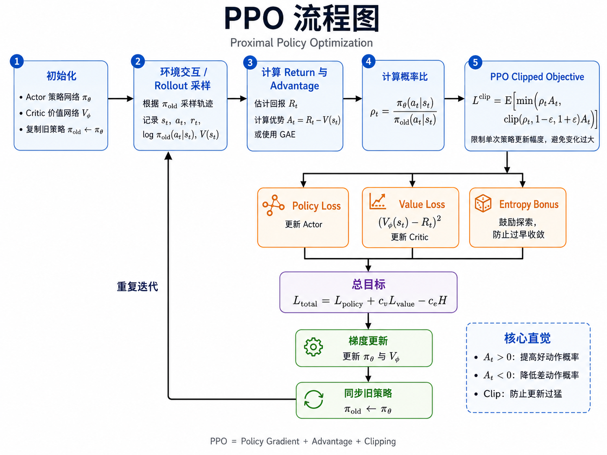
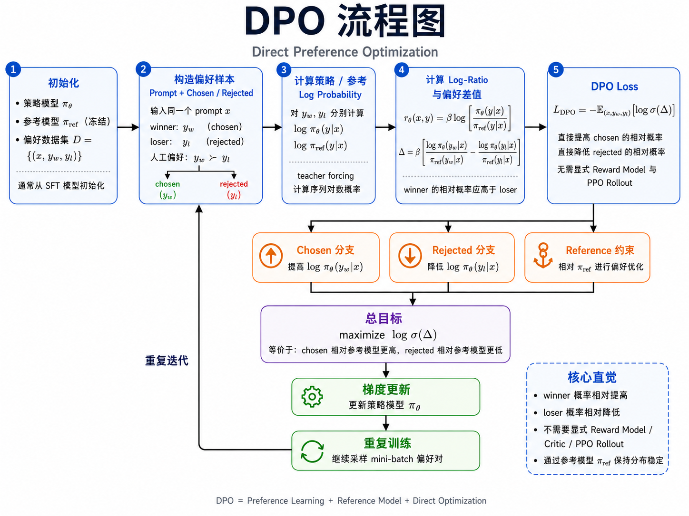
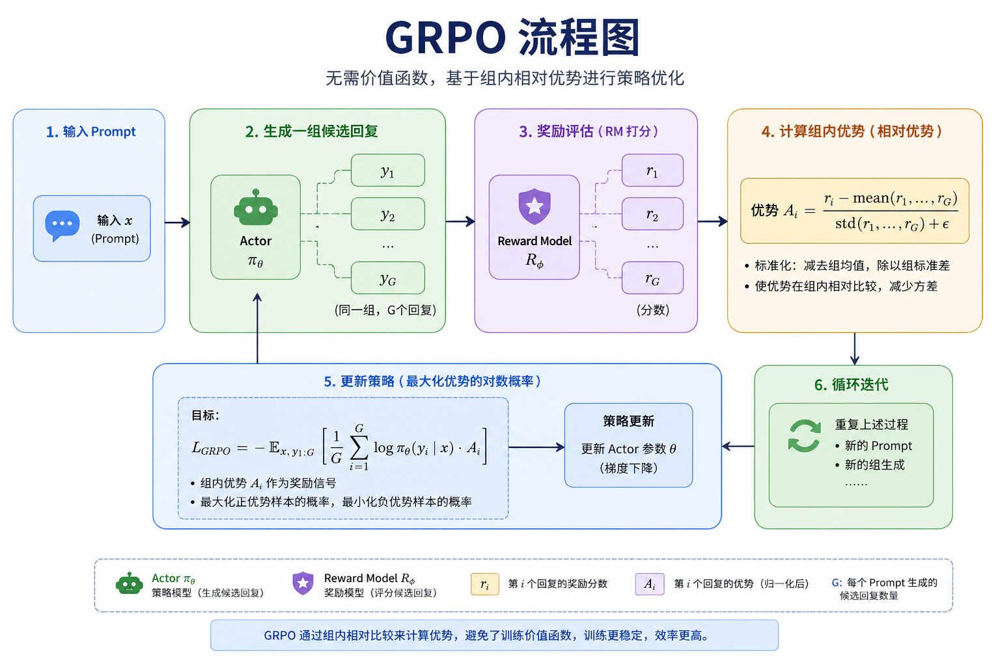
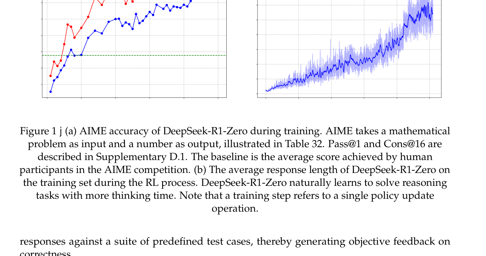

BBBBB_强化学习
八、LLM 对齐¶



大语言模型（LLM）的后训练对齐（alignment）是让模型输出符合人类偏好的关键步骤。主流方法从 PPO 发展到 DPO 再到 GRPO，逐步简化和优化。
RLHF = Reinforcement Learning from Human Feedback，中文常译为"人类反馈强化学习"或"基于人类反馈的强化学习"。
RLHF 的狭义与广义
- 狭义 RLHF（经典定义）：必须包含 Reward Model + PPO 的三阶段流程（SFT → RM → PPO）；
- 广义 RLHF：泛指"用人类反馈对齐 LLM"这类方法，包括 DPO、GRPO 等变体；
- DPO / GRPO：通常叫"RLHF 的替代方案"或"直接偏好优化"，严格来说不算经典 RLHF；
- RLVR：用可验证奖励（数学对错、代码是否通过测试），不算"人类反馈"，所以也不叫 RLHF。
0. 强化学习基础概念¶
本节为 RL 零基础读者提供直觉性介绍，帮助理解后续 PPO/DPO/GRPO 的来源和动机。
0.1 强化学习基础¶
一句话：让一个智能体在环境里试错，做对了给奖励，做错了给惩罚，慢慢学会做最优决策。
类比训练一只狗：坐下 → 给零食；乱叫 → 不给零食。狗慢慢学会"坐下"。这就是强化学习。
核心术语：
| 术语 | 含义 | 例子 |
|---|---|---|
| Agent（智能体） | 做决策的主体 | 狗 / 语言模型 |
| Environment（环境） | agent 与之交互的世界 | 训练场景 / 用户问答场景 |
| Action（动作） | agent 做出的选择 | 坐下 / 生成一段回答 |
| Reward（奖励） | 环境给 agent 的反馈信号 | 零食 / RM 打分 |
| State（状态） | 当前的局面信息 | 当前观察 / prompt + 已生成的 token |
| Policy（策略） | agent 的决策规则 $\pi(a | s)$ |
| Trajectory（轨迹） | 一次完整的交互序列 \((s_1,a_1,r_1,s_2,a_2,r_2,...)\) | 一整轮对话 |
和 supervised learning 的本质区别：监督学习有人告诉你每步的正确答案（标签），RL 没有——你只能从奖励信号中自己摸索。
0.2 RL 的两个核心问题¶
问题一：Explore vs Exploit（探索 vs 利用）
你去一家餐厅吃饭： - 利用：每次都点你吃过最好吃的那道菜 - 探索：试试没吃过的菜，可能更好吃，也可能踩雷
RL 也面临这个两难：当前最好的策略不一定是真正最好的，你需要时不时探索。Bandit 问题就是这个矛盾的最简化版本。推荐系统里的"给用户推新内容"本质上就是探索。
问题二：长期收益 vs 短期奖励
下棋时，你牺牲一个子（短期亏了），但十步后赢了（长期赚了）。RL 要学的不只是"这步给了多少奖励"，而是"这步最终能带来多少累积奖励"。
这个累积奖励叫 Return，通常用折扣因子 \(\gamma\) 来让远期奖励权重递减：
\(\gamma\) 越接近 0 越短视，越接近 1 越重视长期。
0.3 经典方法流派¶
流派 A：Value-Based（基于价值）
核心思路：估计每个状态（或状态-动作对）有多"好"，然后选好的。
- Q(s, a) = 在状态 s 做动作 a，未来能拿到的期望累积奖励
- 策略：选 Q 最大的那个动作
- 代表算法：Q-Learning、DQN
- 直觉：你给每个选择打分，选分数最高的
多模态岗基本不考这个，搜广推会涉及。❓
流派 B：Policy-Based（基于策略）
核心思路：直接学一个策略 \(\pi(a|s)\)，"看到状态 s，以多大概率选动作 a"。
- 策略通常是个神经网络，输出动作的概率分布
- 通过试错，提高好动作的概率，降低坏动作的概率
- 代表算法：Policy Gradient、Actor-Critic、PPO
- 直觉：你不是给选项打分，而是直接学"该怎么做"
这个流派是 RLHF/PPO/DPO 的基础，重点理解。
0.4 Policy Gradient🚗¶
Policy Gradient 是后面一切方法的根基。
做法： 1. 让 agent 用当前策略跑一局（或几局），收集 \((state, action, reward)\) 2. 算每条轨迹的累积奖励 3. 奖励高的轨迹 → 提高这些动作的概率；奖励低的 → 降低概率 4. 更新策略参数
问题：credit assignment
如果一局游戏总奖励是 +10，你不知道是哪步做得好、哪步做得差。奖励信号太粗糙。
改进：加 Baseline（基线）
- 不直接用原始奖励，而是用"奖励 - 基准线"
- 如果某步的回报高于平均水平 → 增加概率
- 如果某步的回报低于平均水平 → 降低概率
- 这样方差更小，训练更稳定
"为什么要加 baseline"是面试高频问题，核心答案就是降方差。
0.4.1 什么是策略¶
策略通常写作 \(\pi_\theta(a\mid s)\)：
- \(\pi\)：策略，智能体选择动作的规则；
- \(\theta\)：策略模型的可训练参数（神经网络权重）；
- \(s\)：state，当前状态；
- \(a\)：action，当前动作；
- \(\pi_\theta(a\mid s)\)：在状态 \(s\) 下，参数为 \(\theta\) 的策略选择动作 \(a\) 的概率。
在大语言模型中：
- 状态 \(s_t\)：用户问题和已生成的 token；
- 动作 \(a_t\)：模型接下来生成的 token；
- 策略 \(\pi_\theta(a_t\mid s_t)\)：模型对下一个 token 的概率分布。
例如 \(\pi_\theta(\text{首都}\mid \text{北京是中国的})=0.85\)，表示模型在"北京是中国的"这一上下文下生成"首都"的概率为 0.85。
0.4.2 策略梯度的优化目标¶
策略梯度希望模型获得尽可能高的平均奖励，目标函数：
- \(J(\theta)\)：期望奖励；
- \(x\)：模型输入（用户问题）；
- \(y\)：模型生成的回答；
- \(\pi_\theta(\cdot\mid x)\)：模型在输入 \(x\) 下定义的回答概率分布；
- \(y\sim\pi_\theta(\cdot\mid x)\)：回答 \(y\) 从当前模型采样得到；
- \(R(x,y)\)：回答 \(y\) 针对问题 \(x\) 获得的奖励。
即：模型针对问题 \(x\) 生成不同回答 \(y\)，每个回答获得一个奖励，训练目标是提高这些奖励的平均值。例如数学问题：答案正确 \(R=1\)，错误 \(R=0\)。
0.4.3 策略梯度的基本公式🚗¶
- \(\nabla_\theta\)：对参数 \(\theta\) 求梯度；
- \(\nabla_\theta J(\theta)\)：参数沿什么方向变化能提高期望奖励；
- \(R(x,y)\)：回答获得的奖励；
- \(\nabla_\theta\log\pi_\theta(y\mid x)\)：应该怎样修改参数，才能改变回答 \(y\) 的生成概率。
乘积 \(R(x,y)\nabla_\theta\log\pi_\theta(y\mid x)\) 表示用奖励控制回答概率的更新方向和强度：奖励高 → 提高概率；奖励低或为负 → 降低概率。
0.4.3.1 乘积的直观理解¶
乘积 \(R(x,y)\nabla_\theta\log\pi_\theta(y\mid x)\) 是策略梯度中最关键的部分，由两部分组成：
前一部分决定"这个回答应该被鼓励还是抑制，以及力度多大"；后一部分决定"模型参数具体应该往哪个方向变化"。
1. \(\nabla_\theta\log\pi_\theta(y\mid x)\) 表示什么
表示"模型参数应该沿哪个方向变化，才能提高回答 \(y\) 的对数概率"。若按梯度方向更新：
其中 \(\alpha > 0\) 是学习率，则更新后通常 \(\pi_{\theta_{\text{new}}}(y\mid x) > \pi_{\theta_{\text{old}}}(y\mid x)\)，即回答 \(y\) 的概率上升。反之，沿相反方向更新则概率下降。
2. 奖励 \(R(x,y)\) 为什么能控制方向
策略梯度采用梯度上升，参数更新为：
奖励 \(R(x,y)\) 是标量，乘以梯度向量会改变其方向或长度：
- \(R(x,y) > 0\)：乘积方向与原始梯度相同，仍指向"提高概率"方向 → \(\pi_\theta(y\mid x)\uparrow\)；
- \(R(x,y) < 0\)：负数反转梯度方向 → \(\pi_\theta(y\mid x)\downarrow\)；
- \(R(x,y) = 0\)：乘积为零，参数不更新。
例如 \(R=2\) 时更新方向为 \(2\nabla_\theta\log\pi_\theta\)，提高概率；\(R=-2\) 时为 \(-2\nabla_\theta\log\pi_\theta\)，降低概率。
3. 奖励为什么还能控制强度
奖励的绝对值 \(|R(x,y)|\) 决定更新向量的长度。设 \(g=\nabla_\theta\log\pi_\theta(y\mid x)\)：
三者方向相同，但长度不同：奖励绝对值大 → 更新幅度大；奖励绝对值小 → 更新幅度小。
4. "奖励低就降低概率"并不严格准确🚗
这是常见误解。在最基础的 REINFORCE 中，只要奖励仍是正数，即使奖励较低，也仍然会提高该回答的概率，只是提高得较少。
例如两个回答分别获得 \(R_1=10\) 和 \(R_2=1\)，对应更新为 \(10\nabla_\theta\log\pi_\theta(y_1\mid x)\) 和 \(\nabla_\theta\log\pi_\theta(y_2\mid x)\)——两个回答的概率都会提高，只是第一个提高得更多。
基础公式的准确关系是：
- \(R > 0\)：提高概率；
- \(R < 0\)：降低概率；
- \(R = 0\)：不更新。
不能简单说"奖励较低就一定降低概率"。
5. 在大语言模型中的 token 级含义
完整回答的对数概率展开为各 token 对数概率之和：
因此：
完整回答获得一个奖励后，该奖励会作用于回答中的全部 token：奖励为正 → 提高这条轨迹中各 token 的联合生成概率；Advantage 为负 → 降低联合概率。
注意这不意味着每个 token 概率变化相同（各 token 对参数的梯度不同），但它们都受同一个序列级奖励/优势值调节。
6. 最准确的总结
在实际 PPO、GRPO 等算法中，通常用 Advantage \(A\) 替代原始奖励 \(R\)：
一句话：梯度方向指出"怎样提高概率"，奖励/Advantage 的符号决定"要不要沿这个方向走"，绝对值决定"走多远"。
0.4.4 为什么使用对数概率🚗¶
大语言模型逐 token 生成。设完整回答 \(y=(y_1,y_2,\ldots,y_T)\)，其概率为连乘：
取对数后连乘变为求和：
其中 \(y_{<t}\) 是第 \(t\) 个 token 之前已生成的所有 token。使用对数概率后，数值计算和反向传播更稳定。
0.4.5 REINFORCE¶
REINFORCE 是最基础的策略梯度算法，损失函数：
- \(\mathcal{L}_{\text{PG}}\)：策略梯度损失；
- \(R(x,y)\)：回答获得的奖励；
- \(\log\pi_\theta(y\mid x)\)：回答的对数概率；
- 负号：把"最大化奖励"转成"最小化损失"（优化器执行梯度下降）。
奖励高时最小化该损失会提高回答 \(y\) 的概率；奖励为负时会降低其概率。
0.4.6 为什么需要 Baseline 和 Advantage¶
只用绝对奖励通常不够稳定。例如一个回答获得 8 分：
- 如果其他回答平均只有 3 分，这个回答很好；
- 如果其他回答平均 9 分，这个回答反而较差。
引入基线 \(b\)，定义优势值：
- \(A\)：Advantage，优势值；
- \(R\)：实际奖励；
-
\(b\)：Baseline，参考水平。
-
\(A > 0\)：优于基线，提高概率；
- \(A < 0\)：差于基线，降低概率；
- \(A = 0\)：与基线相当，无明显更新。
引入 Advantage 后核心公式变为：
Advantage 决定动作该被鼓励还是抑制，概率梯度决定具体如何修改参数。
0.5 Actor-Critic¶
Policy Gradient 的问题：只用采样回报估计好坏，方差太大。
Actor-Critic 的思路：再训一个网络（Critic）来估计"这个状态到底值多少分"，用它替代原始回报，更稳定。
Agent 交互环境，产生 (s, a, r)
↓
┌─────┴──────┐
│ │
Actor Critic
(策略网络) (价值网络)
选动作 给状态打分
↑ │
└──根据评分更新策略──┘
- Actor：策略网络 \(\pi_\theta(a|s)\)，负责选动作（"该做什么"）
- Critic：价值网络 \(V_\phi(s)\)，负责打分（"这个局面有多好"）
Actor 根据 Critic 的评分来更新策略。两者一起训练。
PPO 就是 Actor-Critic 的一种改进版本。 记住这个框架。
符号详解
价值模型写作 \(V_\phi(s)\)：
- \(V\)：Value，价值函数；
- \(\phi\)：价值模型的参数；
- \(V_\phi(s)\)：从状态 \(s\) 开始能够获得的期望回报。
此时 Advantage 可近似为：
- \(R\)：实际获得的奖励；
- \(V_\phi(s)\)：Critic 预测的期望奖励；
-
\(R - V_\phi(s)\)：实际表现与预期表现的差值。
-
\(R > V_\phi(s)\)：实际高于预期，当前动作值得鼓励；
- \(R < V_\phi(s)\)：实际低于预期，当前动作应被抑制。
Actor-Critic 中：
- Actor：策略模型，负责选择动作；
- Critic：价值模型，负责估计预期奖励；
- Advantage：连接 Actor 与 Critic，告诉 Actor 当前动作相对预期是好还是差。
0.5.1 PG 与 PPO / GRPO / DPO 的关系¶
PG 与 PPO
普通策略梯度可能一次性大幅改变模型输出概率，导致训练不稳定。PPO 使用新旧策略的概率比：
- \(r(\theta) > 1\)：新策略提高了动作 \(a\) 的概率；
- \(r(\theta) < 1\)：新策略降低了动作 \(a\) 的概率；
- \(r(\theta) = 1\)：新旧策略概率相同。
PPO 会限制这个概率比的变化幅度，避免模型一次更新过大。
PPO 通常用 Critic 估计 Advantage，所以训练时需要策略模型和价值模型。详见 ### 1. PPO。
PG 与 GRPO
GRPO 同属策略梯度方法，但不使用独立的 Critic。对同一个问题生成一组回答 \(y_1,\ldots,y_G\)，分别获得奖励 \(R_1,\ldots,R_G\)，用组内平均奖励作为基线：
- \(R_i > \bar{R}\) 时 \(A_i > 0\)，提高第 \(i\) 个回答的概率；
- \(R_i < \bar{R}\) 时 \(A_i < 0\)，降低其概率。
PPO 与 GRPO 的核心区别：PPO 用 Critic 估计 Advantage；GRPO 用同一问题多回答的相对奖励计算 Advantage。详见 ### 3. GRPO。
PG 与 DPO
DPO 也会提高优选回答概率、降低拒选回答概率，但它通常不属于标准的在线 Policy Gradient。DPO 使用偏好数据 \((x, y_w, y_l)\)：
- \(y_w\)：winner / chosen，人类更偏好的回答；
- \(y_l\)：loser / rejected，人类较不偏好的回答。
目标是使 \(\pi_\theta(y_w\mid x) > \pi_\theta(y_l\mid x)\)。DPO 不需要：在线生成训练回答、显式奖励模型、Critic、Advantage 估计。它更接近一种基于偏好对的直接监督优化方法。详见 ### 2. DPO。
0.5.2 总结¶
Policy Gradient 核心公式：
各部分作用：
- \(\pi_\theta(a\mid s)\)：模型选择动作的概率；
- \(\nabla_\theta\log\pi_\theta(a\mid s)\)：如何修改参数以改变动作概率；
- \(A\)：动作相对于基线的优势（\(A>0\) 提高，\(A<0\) 降低）；
- \(\mathbb{E}\)：对多个训练样本的梯度取平均。
方法关系链：
一句话：Policy Gradient 就是先让模型生成动作/回答，再根据奖励判断这些动作是否值得鼓励，最后直接调整这些动作的生成概率。
0.6 关键概念¶
| 概念 | 一句话说清 |
|---|---|
| On-policy vs Off-policy | On-policy 只用当前策略产生的数据训练（PPO）；Off-policy 可以用其他策略产生的历史数据（DQN） |
| Trajectory（轨迹） | agent 从开始到结束经历的一系列 \((s, a, r)\) |
| Discount factor \(\gamma\) | 远期奖励的衰减系数，越远权重越小 |
| Advantage（优势） \(A(s,a)\) | 这个动作比"平均水平"好多少：\(A(s,a) = Q(s,a) - V(s)\) |
| Importance sampling | 用旧策略的数据来估计新策略的期望 |
| Reference model | RL 训练时的锚点，通常是 SFT 模型，防止策略跑太远 |
1. PPO¶
1.1 解决什么问题¶
上一节我们讲了 Actor-Critic：Actor 选动作，Critic 打分，Actor 根据 Critic 的评分更新策略。
但这个框架有个坑：如果一次更新太猛，策略可能变得很烂，而且很难恢复。
类比：你在学做菜，本来做得还行，突然看了一个"颠覆性教程"全盘推翻自己的做法，结果连蛋炒饭都不会了。Policy Gradient 就是这样——它的更新幅度没有约束，一步走错满盘皆输。
PPO 的核心思想就一句话：通过裁剪新旧策略的概率比，限制目标函数继续奖励过大的策略变化，让策略更新更加保守和稳定。
注意：PPO 裁剪的是代理目标中的优化收益，而不是直接锁死参数或概率变化。
1.2 怎么做到的¶
PPO 算一个新旧策略的比率（importance ratio），针对轨迹中每个时间步 \(t\) 计算：
- \(\pi_\theta\)：正在更新的新策略；
- \(\pi_{\theta_{\text{old}}}\)：采集当前这批轨迹时使用的旧策略；
- \(\rho_t > 1\)：新策略比旧策略更倾向于选这个动作；
- \(\rho_t < 1\)：新策略比旧策略更不倾向于选这个动作；
- \(\rho_t = 1\)：没变化。
然后 PPO clip 这个比率，不让它偏离 1 太远（通常限制在 \([1-\varepsilon, 1+\varepsilon]\)，\(\varepsilon\) 一般取 0.2）：
# PPO 的核心：clipped surrogate objective
ratio = pi_theta(a_t | s_t) / pi_old(a_t | s_t)
# Advantage 通常用 GAE 或累计回报减价值函数估计，不是单步奖励减基线
advantage = A_t # 例如 GAE: A_t = hat_R_t - V_psi(s_t)
unclipped_objective = ratio * advantage
clipped_objective = clip(ratio, 1 - eps, 1 + eps) * advantage # eps = 0.2
# 取 min：advantage > 0 时不让 ratio 超过 1+eps 的额外收益
# advantage < 0 时不让 ratio 低于 1-eps 的额外收益
policy_loss = -mean(min(unclipped_objective, clipped_objective))
负号是因为论文通常写"最大化目标"，而深度学习代码通常执行"最小化损失"。
完整的 PPO clipped objective：
直觉：
- 如果某个动作很好（\(A_t > 0\)），PPO 会尝试提高它的概率；但当 \(\rho_t\) 超过 \(1+\varepsilon\) 后，该样本不再提供继续提高概率的额外优化收益
- 如果某个动作很差（\(A_t < 0\)），PPO 会尝试降低它的概率；但当 \(\rho_t\) 低于 \(1-\varepsilon\) 后，该样本不再提供继续降低概率的额外优化收益
⚠️ 重要：clip 不严格保证概率比始终在 \([1-\varepsilon, 1+\varepsilon]\) 内🚗
PPO 裁剪的是代理目标中的优化收益，不是直接截断模型输出概率。原因：
- 神经网络参数由很多样本共同更新，一个样本的梯度可能间接改变另一个样本的概率；
- 多轮 minibatch 更新后，某些动作的概率比仍可能超出区间；
- PPO-Clip 并不构成严格的 trust region 约束。
所以不能说"最多增加到旧概率的 1.2 倍/最多降低到 0.8 倍"——这只是非常粗略的入门直觉。严格含义是：超出裁剪区间后，该样本不再为策略变化提供额外优化激励。
⚠️ 易混淆点：\(\pi_{\theta_{\text{old}}}\) 和 \(\pi_{\text{ref}}\) 不是同一个东西
| \(\pi_{\theta_{\text{old}}}\)（旧策略） | \(\pi_{\text{ref}}\)（参考模型） | |
|---|---|---|
| 是什么 | 采集当前 rollout 数据时的行为策略 | SFT 模型的冻结副本 |
| 会不会变 | ✅ 一次 rollout 批次内保持固定；完成该批 PPO 优化后，用更新后的 \(\pi_\theta\) 采集下一批 | ❌ 整个训练过程不变 |
| 用在哪里 | importance ratio \(\rho_t\) 的分母 | KL 散度约束 |
注意：\(\pi_{\theta_{\text{old}}}\) 不是每个梯度 step 都刷新。如果在每个 step 后都令 \(\pi_{\theta_{\text{old}}} \leftarrow \pi_\theta\)，则 \(\rho_t\) 不断恢复为 1，clip 就失去意义。正确做法是：一次 rollout 批次内 \(\pi_{\theta_{\text{old}}}\) 固定，在该批数据上做若干 epoch 的 minibatch 更新，然后再用新策略采集下一批。
具体过程：
第 1 批 rollout：
π_old = π_θ 的初始状态（通常 = SFT 模型）
π_ref = SFT 模型（冻结）
刚采样完时 π_old == π_ref，对采样动作 ρ_t = 1
→ 在这批数据上做若干 epoch 更新后，π_θ 改变，ρ_t ≠ 1
第 2 批 rollout：
用更新后的 π_θ 采集新数据 → π_old 刷新为当前 π_θ
π_ref = 还是 SFT 模型（没变过）
此时 π_old ≠ π_ref
第 N 批 rollout：
π_old = 第 N-1 批更新后的 π_θ
π_ref = 还是那个 SFT 模型
π_old 通常已经不同于 π_ref，但 KL 约束会抑制二者偏离过大
注意："第 1 批 ratio = 1"只在刚开始对当前 rollout 进行优化之前成立。第一次梯度更新后 \(\pi_\theta\) 改变，\(\rho_t\) 通常就不再等于 1。
它们各自解决什么问题： - \(\pi_{\theta_{\text{old}}}\)（ratio 的分母）：防止单批更新太猛——"这一批数据和采集时比，策略变化了多少？"→ clip 限制每批的变化幅度 - \(\pi_{\text{ref}}\)（KL 约束）：防止累积跑太远——"训练到现在，和最初的 SFT 模型比，跑了多远？"→ 惩罚项防止整体偏移
类比：想象你在学画画——\(\pi_{\theta_{\text{old}}}\) 是你昨天的画技（今天不要突然大改风格），\(\pi_{\text{ref}}\) 是你入学时的作品（任何时候都别偏离你的基础太远）。昨天你可能已经和入学时差很多了，但两个约束各有各的用处。
1.3 PPO 的三个主要损失¶
PPO 通常包含三个主要损失：
分别是 Policy Loss（更新 Actor）、Value Loss（更新 Critic）和 Entropy Loss（鼓励探索）。
1.3.1 Policy Loss¶
PPO 的核心策略损失为：
其中 \(\rho_t = \frac{\pi_\theta(a_t \mid s_t)}{\pi_{\mathrm{old}}(a_t \mid s_t)}\) 是新旧策略概率比，\(A_t\) 是 Advantage（优势函数），\(\varepsilon\) 是裁剪范围（通常 \(0.1\) 或 \(0.2\)）。
\(\rho_t\) 可以直接理解为：对于 rollout 中已经执行过的同一个动作 \(a_t\)，新策略给它的概率是旧策略的多少倍。这里比较的不是两个策略的全部概率分布，而是它们在同一个状态 \(s_t\) 下，对同一个动作 \(a_t\) 给出的概率。
分子和分母分别是什么：假设 rollout 时旧策略在状态 \(s_t\) 下实际采样出了动作 \(a_t\)，分母 \(\pi_{\mathrm{old}}(a_t \mid s_t)\) 就是旧策略当时给这个动作的概率；模型经过若干次参数更新后，新策略对同一个状态、同一个动作重新计算概率，即分子 \(\pi_\theta(a_t \mid s_t)\)。二者相除就是"新旧策略概率比"。
数值例子：设 \(s_t =\)"法国的首都是"，rollout 时旧策略生成了 \(a_t =\)"巴黎"，且 \(\pi_{\mathrm{old}}(\text{巴黎} \mid s_t) = 0.5\)。模型更新后新策略给出 \(\pi_\theta(\text{巴黎} \mid s_t) = 0.6\)，则：
这表示新策略生成"巴黎"的概率是旧策略的 \(1.2\) 倍，即相对提高了 \(20\%\)（注意这是相对变化，不是绝对概率增加 \(1.2\)）。
\(\rho_t\) 的三种情况：
\(A_t\) 表示"当前动作比 Critic 预期的平均水平好多少"：
- \(\hat{R}_t\)：从第 \(t\) 步开始实际获得（或估计）的累积回报；
- \(V_\phi(s_t)\)：Critic 对状态 \(s_t\) 的未来回报预期；
- \(A_t > 0\)：实际回报高于预期，当前动作优于平均水平；
- \(A_t < 0\)：实际回报低于预期，当前动作差于平均水平。
\(\rho_t A_t\) 的含义：\(\rho_t\) 描述新策略对动作概率的改变，\(A_t\) 描述这个动作本身好不好，二者相乘表示"策略变化与动作质量是否一致"。🚗
- \(A_t > 0\) 且 \(\rho_t > 1\)：好动作的概率被提高，方向正确；
- \(A_t > 0\) 且 \(\rho_t < 1\)：好动作的概率被降低，方向错误；
- \(A_t < 0\) 且 \(\rho_t < 1\)：差动作的概率被降低，方向正确；
- \(A_t < 0\) 且 \(\rho_t > 1\)：差动作的概率被提高，方向错误。
| \(A_t\) | \(\rho_t\) | 含义 | 是否符合优化目标 |
|---|---|---|---|
| \(>0\) | \(>1\) | 提高好动作概率 | 正确 |
| \(>0\) | \(<1\) | 降低好动作概率 | 错误 |
| \(<0\) | \(<1\) | 降低差动作概率 | 正确 |
| \(<0\) | \(>1\) | 提高差动作概率 | 错误 |
Policy Loss 的作用：
- \(A_t > 0\)：提高好动作的概率；
- \(A_t < 0\)：降低差动作的概率；
- \(\operatorname{clip}\) 限制概率比变化过大，避免策略一次更新太猛。
注意：clip 不是把概率比强制锁在 \([0.8, 1.2]\)，而是超出区间后该样本不再提供额外优化收益。
1.3.2 Value Loss¶
Critic 用均方误差学习预测未来回报：
其中 \(V_\phi(s_t)\) 是 Critic 对状态 \(s_t\) 的价值预测，\(\hat{R}_t\) 是目标回报。
由于 \(A_t = \hat{R}_t - V_\phi(s_t)\)，Value Loss 也可以写成：
也就是说，Value Loss 本质上是让 Advantage 的平方尽量小。Critic 预测越接近实际回报，\(A_t\) 越接近 0，Policy Loss 中的 \(A_t\) 就越能真实反映"当前动作比预期好/差多少"，而不是被 Critic 的预测偏差所干扰。
1.3.3 Entropy Loss¶
策略熵衡量输出分布的确定性：
熵越高越平坦（更愿意探索），熵越低越集中（策略越确定）。直观地说：平坦分布中各动作概率接近，模型不确定选哪个，会多尝试；尖锐分布中某个动作概率接近 1，模型几乎死盯这一个。
高熵例子（平坦分布，探索）：
| 动作 | 概率 |
|---|---|
| A | 0.33 |
| B | 0.33 |
| C | 0.34 |
各动作概率接近，模型没有明显偏好，会随机尝试不同动作。
低熵例子（尖锐分布，确定）：
| 动作 | 概率 |
|---|---|
| A | 0.95 |
| B | 0.03 |
| C | 0.02 |
概率集中在 A 上，模型非常确定要选 A。
总损失中通常以 \(-c_e \mathcal{H}\) 形式出现，保留探索能力、防止策略过早收敛到单一动作。在大模型 RLHF 中，entropy bonus 有时很小或不单独使用。
1.3.4 三个 Loss 分别训练谁¶
| Loss | 训练对象 | 作用 |
|---|---|---|
| Policy Loss | Actor | 提高好动作概率，降低差动作概率 |
| Value Loss | Critic | 准确预测未来回报 |
| Entropy Loss | Actor | 保留探索，防止策略过度确定 |
若 Actor 和 Critic 共享 backbone，三种损失会共同影响共享参数。
1.3.5 RLHF 中的 KL 约束🚗¶
可以把 PPO-RLHF 拆成两层理解：
- 第一层：判断"这个回答到底好不好"——由 Reward Model 和 KL 共同决定；
- 第二层：决定"模型参数怎么更新"——由 Policy Loss、Value Loss、Entropy Loss 完成。
KL 主要作用在第一层。
KL 在惩罚什么
KL 衡量当前 Actor 与冻结的 SFT 参考模型之间的差异：
KL 越大，Actor 偏离参考模型越远。RLHF 的实际优化目标可以写成：
对应到最终奖励：
例子：两个回答都获得 \(R_{\text{RM}} = 8\)，但 KL 不同：
| 回答 | \(R_{\text{RM}}\) | \(D_{\mathrm{KL}}\) | \(R_{\text{final}}\)（\(\beta=1\)） |
|---|---|---|---|
| A | 8 | 0.5 | 7.5 |
| B | 8 | 4 | 4 |
回答 B 偏离参考模型太远，最终奖励被压低，PPO 会更倾向于鼓励回答 A。
KL 与三个 Loss 的关系
KL 通常不直接作为第四个 loss，而是先修改奖励，再间接影响后续损失：
R_RM → R_final = R_RM - βKL → return → advantage → Policy Loss
↓
Value Loss
也就是说：
- KL 改变"这个动作有多好"的评价；
- Advantage \(A_t = \hat{R}_t - V_\phi(s_t)\) 中的 \(\hat{R}_t\) 已经包含 KL 惩罚；
- Policy Loss 根据修正后的 Advantage 更新 Actor；
- Value Loss 让 Critic 学会预测包含 KL 惩罚后的最终回报。
KL 与 Entropy 的区别
- Entropy：控制当前策略本身是否过于集中，防止过早失去探索能力；
- KL：控制当前策略与参考模型相比变化了多少，防止偏离 SFT 模型太远。
二者作用对象不同，不能互相替代。
两种常见的 KL 加入方式
方式一：把 KL 加入奖励（更常见）
此时总损失仍然是 Policy + Value + Entropy，但 KL 已经通过 reward 和 advantage 进入前两个损失。
方式二：把 KL 作为独立 loss
两种写法目标一致：最大化 \((R - \beta KL)\) 等价于最小化 \((-R + \beta KL)\)。
数值例子
设 \(R_{\text{RM}} = 10\)，\(KL = 3\)，\(\beta = 0.5\)，则：
若 Critic 预测 \(V(s) = 7\)，则 \(A = 8.5 - 7 = 1.5 > 0\)，Policy Loss 会提高该回答概率。
如果 KL 非常大，例如 \(KL = 10\)：
此时 \(A = 5 - 7 = -2 < 0\)，即使 Reward Model 给了高分，PPO 也会降低该回答概率，因为它偏离参考模型太远。
最终关系
| 部分 | 作用 |
|---|---|
| Reward Model | 判断回答是否符合人类偏好 |
| KL | 防止 Actor 偏离 SFT 参考模型太远 |
| Advantage | 综合最终奖励与 Critic 基线 |
| Policy Loss | 根据 Advantage 更新 Actor |
| Value Loss | 让 Critic 学会预测最终回报 |
| Entropy Bonus | 保持一定探索能力 |
核心主线：
因此，KL 与三个 loss 的关系不是简单的"第四个 loss"，而是通过改变奖励/advantage 间接影响 Policy Loss 和 Value Loss。
1.3.6 一个典型代码形式¶
ratio = torch.exp(new_log_prob - old_log_prob)
policy_loss_1 = ratio * advantage
policy_loss_2 = torch.clamp(ratio, 1 - epsilon, 1 + epsilon) * advantage
policy_loss = -torch.mean(torch.min(policy_loss_1, policy_loss_2))
value_loss = torch.mean((value_pred - return_target) ** 2)
entropy = -torch.mean(torch.sum(prob * log_prob, dim=-1))
total_loss = policy_loss + value_coef * value_loss - entropy_coef * entropy
最终可以记成：
1.4 RLHF 完整流程🚗¶
前面讲的是通用 RL 中的 PPO。在大模型对齐（RLHF）中，PPO 被嵌入到一个三阶段 pipeline 里：
Step 1: SFT（监督微调）
用人工标注的高质量问答对微调 base model
得到 π_sft，让模型学会"对话的格式"
Step 2: Train Reward Model（训练奖励模型 R_φ）
从语言模型中采样多个回答
由标注员对回答进行排序或成对比较（哪个更好）
用这些偏好数据训练 Reward Model，学会给回答打分
Step 3: PPO 强化学习
Actor = 语言模型 π_θ（生成回答）
Critic = 价值网络 V_ψ（估计当前生成状态下未来可获得的期望回报，用于计算 Advantage）
Reward Model R_φ 给每个生成的回答打分
用 PPO 更新语言模型
注意这里逻辑上需要维护四个模型角色：🚗
| 模型 | 角色 | 是否训练 | 主要输出 |
|---|---|---|---|
| \(\pi_\theta\) | Actor | 是 | 生成回答、token 概率 |
| \(\pi_{\text{ref}}\) | Reference | 否 | 参考 log probability |
| \(R_\phi\) | Reward Model | 否 | 完整回答的 reward |
| \(V_\psi\) | Critic | 是 | 每个状态的 value |
工程层面的简化："四个模型同时在跑"是逻辑层面的概念，不一定等于四个完全独立、同尺寸、同时常驻 GPU 的模型。实际实现中可能共享主干、使用不同大小模型、CPU offload 或分阶段执行。
一次 PPO 迭代的数据流大致如下：
Prompt
│
▼
Actor 生成回答
│
├──────────────► Reference 计算参考 log probability
│
├──────────────► Reward Model 给完整回答打分
│
└──────────────► Critic 预测每个 token 状态的 value
│
▼
reward + KL → return → advantage
│
▼
PPO 更新 Actor 和 Critic
1.4.1 Actor¶
Actor 是 PPO 真正要优化的策略模型 \(\pi_\theta(a_t \mid s_t)\)，通常从 SFT 模型初始化。它输出词表上的下一个 token 概率分布，在 rollout 阶段采样生成回答，并记录每个 token 的 old_log_prob。
Actor 主要由 Policy Loss 更新，是四个角色中最核心、计算量通常也最大的可训练模型。
1.4.2 Reference Model¶
Reference Model \(\pi_{\text{ref}}\) 是 SFT 模型的冻结副本，训练期间参数不更新。它不对 Prompt 自由生成回答，而是对 Actor 已经生成的回答做 teacher forcing，计算每个 token 的参考 log probability：
Teacher forcing 的含义
自回归模型生成下一个 token 时，需要把"已生成的 token"作为输入。这里有两种方式：
| 方式 | 输入用什么 | 用途 |
|---|---|---|
| 自由生成 | 用上一步自己生成的 token | 真正让模型写一条新回答 |
| Teacher forcing | 用给定目标序列里的真实 token | 评估模型"看到正确前缀后，下一个 token 的概率是多少" |
直观类比：
- 自由生成 = 学生闭卷写作文，下一句靠自己上一句写了什么来续写；
- Teacher forcing = 老师把标准范文摆在学生面前，让学生只看前文，预测下一个词应该是什么。学生不需要真的写完整篇，只要评估"我认不认同这个位置的词"。
为什么 Reference Model 要用 teacher forcing
PPO 需要对比 Actor 和 Reference 在同一条回答上的概率差异。假设 Actor 对 Prompt \(x\) 生成了回答 \(y = (y_1, y_2, y_3)\)：
| 位置 | Teacher forcing 输入给 Reference | Reference 计算 |
|---|---|---|
| 1 | \(x\) | \(\pi_{\text{ref}}(y_1 \mid x)\) |
| 2 | \(x, y_1\) | \(\pi_{\text{ref}}(y_2 \mid x, y_1)\) |
| 3 | \(x, y_1, y_2\) | \(\pi_{\text{ref}}(y_3 \mid x, y_1, y_2)\) |
注意：\(y_1, y_2, y_3\) 都是 Actor 已经生成的 token，不是 Reference 自己生成的。Reference 只是被"强制"按这个序列逐位计算概率，所以叫 teacher forcing。
如果用自由生成，Reference 可能会生成另一条不同的回答，就没法逐 token 和 Actor 对齐比较了。teacher forcing 让 Reference 一次性、确定性地给出"SFT 模型对 Actor 这条回答的逐 token 概率"，从而算出 KL 惩罚：
Reference 的作用不是判断回答好不好，而是判断"当前 Actor 与原来的 SFT 模型相比偏离了多少"。
1.4.3 Reward Model¶
Reward Model \(R_\phi(x, y)\) 输入完整 Prompt + Response，输出一个标量分数，表示回答符合人类偏好的程度。它通常在 PPO 之前用偏好数据 \((x, y_w, y_l)\) 单独训练，PPO 阶段冻结。
Reward Model 的模型选择
Reward Model 通常选择与 Actor 同家族的 causal language model，例如 Actor 用 LLaMA 则 RM 也用 LLaMA，Actor 用 Qwen 则 RM 也用 Qwen。原因是同家族模型共享 tokenizer 和词表，便于处理完全相同的 prompt-response 序列。
Reward Model 的大小通常比 Actor 小一号。常见配置：
| Actor 大小 | RM 常见大小 | 原因 |
|---|---|---|
| 70B | 7B ~ 13B | 排序/打分任务比生成简单，小模型足够 |
| 7B | 1B ~ 3B 或同尺寸 | 资源紧张时用更小 RM，也可同尺寸 |
打分类任务比生成任务简单，因此 RM 不需要和 Actor 一样大。但如果 RM 太小，可能无法可靠区分复杂回答的优劣。
Reward Model 的初始化设计
最常见做法是从 SFT 模型初始化：
SFT Model
↓
移除 LM Head
↓
添加 scalar Reward Head（hidden_size → 1）
↓
用偏好数据训练
具体结构：
Prompt + Response
↓
Transformer
↓
最后一个有效 token 的 hidden state
↓
Linear(hidden_size → 1)
↓
Reward score
取最后一个有效 token 的隐藏状态，是因为 causal LM 的最后一个 token 已经聚合了整段文本的信息。
也可以从 base model 初始化，但 SFT 模型通常更优——它已经理解"好回答长什么样"，只需要在此基础上学习"如何打分"。
Reward Model 与 Critic 的区别：
- Reward Model：评价完整回答有多好；
- Critic：预测从当前 token 前缀继续生成，预期最终能拿到多少累计回报。
1.4.4 Critic¶
Critic \(V_\psi(s_t)\) 是一个 Transformer + value head，对每个 response token 对应的状态输出一个标量价值。它的训练目标是拟合 return：
Critic 预测用于构造 Advantage \(A_t = \hat{R}_t - V_\psi(s_t)\)。由于 Actor 不断更新，生成的回答分布也在变化，所以 Critic 必须跟随 Actor 同步训练。
Critic 常见初始化方式：
- 从 Reward Model 初始化；
- 从 Actor/SFT 初始化并新增 value head；
- 与 Actor 共享主干（省参数，但可能产生梯度干扰）。
1.4.5 \(\pi_{\text{old}}\) 不是第五个模型¶
PPO 公式中的 \(\pi_{\text{old}}\) 不是长期独立模型，它只是"生成当前 rollout 时使用的 Actor 快照"。工程中通常只保存 rollout 时每个动作的 old_log_probs，下一批 rollout 再用更新后的 Actor 重新生成、覆盖旧值。
1.4.6 工程架构的常见选择🚗¶
方案一：四个独立模型
Actor: 7B（训练）
Reference: 7B（冻结）
Reward: 7B（冻结）
Critic: 7B（训练）
模块清晰，但显存和通信开销最大。
方案二：Actor 与 Critic 共享主干
Shared Transformer
├── LM Head → logits
└── Value Head → scalar value
Reference: 独立冻结副本
Reward: 独立冻结模型
减少参数量，但 Policy Loss 与 Value Loss 可能互相干扰。
方案三：分离模型 + 分布式/混合调度
把 Actor、Critic、Reward、Reference 分配到不同 GPU 组，或通过时间复用减少同时常驻显存的压力。
四个模型不一定要一样大，常见配置如 Actor/Reference 7B、Reward/Critic 3B，只要 Actor 与 Reference 使用相同 tokenizer 和词表即可。
1.4.7 一句话类比¶
- Actor：学生，负责作答并不断学习；
- Reference：学生原来的稳定答题风格，防止为了讨好阅卷老师而彻底改坏；
- Reward Model：阅卷老师，对完整答案给分；
- Critic：辅导老师，在答题过程中预测"照这样答下去大概能得多少分"。
Reference Model 的作用详解：
\(\pi_{ref}\) 就是 SFT 模型的冻结副本，在整个 PPO 训练过程中参数不更新。它的作用是当锚点——通过 KL 散度约束，让正在训练的 Actor 不能跑太远。
π_ref（SFT 模型，冻结）
↑
│ KL 散度惩罚
│ "你偏离我太远就要扣分"
↓
π_θ（正在训练的 Actor）
为什么需要这个锚点？
-
缓解 reward hacking 和策略分布漂移：如果没有 \(\pi_{\text{ref}}\)，Actor 可以为了拿高分完全改变自己的输出风格。比如 RM 偏好长回答，Actor 就疯狂灌水写废话，和 SFT 模型的回答质量完全脱节。KL 约束不能彻底防止 reward hacking，但能降低策略通过大幅偏离参考分布来利用 RM 漏洞的风险。
-
保留 SFT 阶段学到的能力：SFT 模型已经学会了"好好说话"、"回答格式正确"等基本能力。KL 约束保证这些能力不会在 RL 训练中被丢掉。
-
数值稳定性：语言模型的输出空间极其庞大，不约束的话概率分布可以剧烈抖动，训练直接崩。
RLHF 的上层优化目标（KL 正则化的期望奖励）：🚗🚗🚗🚗🚗
- \(R_\phi(x,y)\)：Reward Model 给回答的打分
- \(D_{\text{KL}}\left(\pi_\theta(\cdot\mid x) \| \pi_{\text{ref}}(\cdot\mid x)\right)\)：两个概率分布之间的 KL 散度（\(\cdot\) 表示整个 token 词表上的分布），防止策略偏离 SFT 模型太远
- \(\beta\)：KL 惩罚系数
⚠️ 这不是 PPO clipped objective🚗：这个公式是 RLHF 的上层优化目标（KL 正则化的期望奖励），PPO 是用于近似优化这个目标的具体策略优化算法。它没有包含概率比 \(\rho_t\)、Advantage \(A_t\)、clip、value loss、entropy bonus 等 PPO 的组成部分。
PPO 的实际 policy objective（用于更新 Actor）：
在实际 RLHF 中，奖励 \(R_\phi\) 和 KL 惩罚会先进入 reward/return/advantage 的计算（把序列级奖励及 KL 惩罚构造成 token-level reward，再通过价值模型和 GAE 计算每个 token 的 Advantage），再由 PPO clipped objective 更新策略。
为什么需要 KL 约束？ 如果没有这个约束，模型会 reward hacking——找到 Reward Model 的漏洞，生成 RM 打高分但人类觉得很烂的回答。比如模型发现"回答越长 RM 打分越高"，就开始疯狂灌水。KL 约束让模型不能跑太远，保持和 SFT 模型的基本一致性。
1.5 PPO 的优缺点¶
优点： - 可以在线采样，动态探索新的回答空间 - 具有清晰的策略梯度基础，实践中通常比原始 Policy Gradient 更稳定，并允许在同一批 rollout 上进行多轮 minibatch 更新
⚠️ 不能笼统说"有收敛保证"：PPO 的 clipped objective 主要是经验性、工程性设计，不像 TRPO 那样基于显式 KL trust-region constraint 推导单调改进界。
缺点： - 训练链路复杂、较敏感：相比 SFT 或 DPO，PPO-RLHF 对奖励尺度、KL 系数、Advantage 估计、学习率和 rollout 设置较为敏感，调参不当时容易出现不稳定 - 显存和计算开销大：需要同时维护多个大模型角色，开销显著高于普通 SFT。实际开销取决于模型是否共享参数、权重精度、并行策略和 offload 方案，不能简单等同于四个完整模型参数量相加 - 工程复杂度高：调参困难，训练容易崩
代表模型：InstructGPT、初代 ChatGPT，以及在 RLHF 阶段结合 PPO 与 rejection sampling 的 LLaMA 2-Chat
⚠️ LLaMA 2-Chat 的 RLHF 不只是 PPO，还使用了 rejection sampling fine-tuning：早期版本主要用 rejection sampling，之后将 rejection sampling 与 PPO 顺序结合。
2. DPO¶
2.1 动机¶
PPO 需要 4 个模型同时跑，显存爆炸、训练不稳定、调参困难。能不能简化？
DPO 作者的核心洞察：Reward Model 本质上是在做"哪个好哪个差"的排序，而 RLHF 的目标函数经过数学变换后，可以直接用偏好数据来表达——根本不需要显式的 Reward Model。
2.2 核心 idea¶
先说 Winner 和 Loser 是什么：
Winner（\(y_w\)）是人类标注员觉得更好的回答，Loser（\(y_l\)）是觉得更差的回答。
数据怎么来的：
Step 1: 给模型一个 prompt
"解释一下什么是量子计算"
Step 2: 让模型生成多个回答（通常 2 个就够）
回答 A: "量子计算是利用量子力学原理进行信息处理的计算方式..."
回答 B: "量子计算就是很快的计算机，比普通计算机快很多倍..."
Step 3: 人类标注员判断哪个更好
标注员看了两个回答，觉得 A 更准确、更专业
→ A 是 winner (y_w)
→ B 是 loser (y_l)
Step 4: 形成训练数据
(prompt, winner, loser) 三元组
数据格式：
{
"prompt": "解释一下什么是量子计算",
"winner": "量子计算是利用量子力学原理进行信息处理的计算方式...",
"loser": "量子计算就是很快的计算机，比普通计算机快很多倍..."
}
和 RLHF 的关系：DPO 的数据其实就是 RLHF 中训练 Reward Model 用的同一批偏好数据。
RLHF:
偏好数据 → 训练 Reward Model → 用 RM 给回答打分 → PPO 训练
DPO:
偏好数据 → 直接训练语言模型（跳过 RM）
DPO 的聪明之处在于：既然偏好数据已经告诉你"哪个好哪个差"了，为什么还要绕一圈训个 RM？直接用这些数据训模型不就行了。🚗
DPO 的数学变换：
Step 1：写出 RLHF 的最优策略形式 $\(\pi_\theta^*(y|x) = \frac{1}{Z(x)} \pi_{ref}(y|x) \exp\left(\frac{R_\phi(x,y)}{\beta}\right)\)$
Step 2：反解出奖励 $\(R_\phi(x,y) = \beta \log \frac{\pi_\theta(y|x)}{\pi_{ref}(y|x)} + \beta \log Z(x)\)$
Step 3：代入 Bradley-Terry 偏好模型 人类偏好"winner"胜过"loser"的概率模型
最终得到一个极其简洁的损失函数：🚗
公式看着长，直觉其实很简单：
# DPO 的本质：直接提高 winner 的概率，降低 loser 的概率
# 算 winner 和 loser 相对于 reference model 的概率变化
log_ratio_w = log π_θ(y_w|x) - log π_ref(y_w|x) # winner 的相对概率
log_ratio_l = log π_θ(y_l|x) - log π_ref(y_l|x) # loser 的相对概率
# 让 winner 的相对概率 > loser 的相对概率
loss = -log sigmoid(β * (log_ratio_w - log_ratio_l))
和 Policy Gradient 的关系：回忆 0.4 节讲的 Policy Gradient——"奖励高的轨迹提高概率，奖励低的降低概率"。DPO 本质上就是这件事，只不过"奖励"换成了"人类偏好排序"，不再需要一个单独的 Reward Model 来打分。
2.3 只需要 2 个模型¶
| 模型 | 角色 | 说明 |
|---|---|---|
| \(\pi_\theta\) | 正在训练的模型 | 要优化的语言模型 |
| \(\pi_{ref}\) | Reference | SFT 模型的冻结副本，作为锚点 |
没有 Reward Model，没有 Critic。训练过程就是一个标准的分类任务——输入是 (prompt, winner, loser) 三元组，输出是 loss。
2.4 DPO 的优缺点¶
优点： - 极简：只需要 2 个模型，训练就是标准分类 - 稳定：不存在 PPO 那种 4 个模型互相影响的问题 - 省显存：显存占用大幅降低
缺点： - 离线学习：只能用预先收集好的偏好数据，无法在线探索新回答 - 数据质量敏感：偏好数据如果不好，模型直接学歪 - 无法动态纠偏：模型生成坏回答时没有机制实时修正
代表模型：LLaMA 3、Zephyr、Tulu
3. GRPO¶
论文：DeepSeek-AI, 2024（DeepSeek-V3 技术报告）
3.1 动机¶
PPO 最大的开销之一是 Critic（价值网络）。Critic 本身也是个大模型，和 Actor 差不多大，额外占一倍显存。
回忆 0.4 节讲的 baseline：Policy Gradient 需要一个 baseline 来降方差，Actor-Critic 用 Critic 网络来估计这个 baseline。
GRPO 的思路：不用 Critic 网络，用"同一道题多个回答互相比较"来估计 baseline。
3.2 怎么做到的¶
对于每个 prompt x：
1. 用 π_θ 采样 G 个回答（比如 G=8）
2. 用 Reward Model 给每个回答打分：r_1, r_2, ..., r_G
3. 算这 G 个分数的均值和标准差
4. 每个回答的 advantage = (它的分数 - 组内均值) / 组内标准差
5. 用 PPO 的 clip 机制更新策略
直觉：不需要一个独立的 Critic 网络来打分，同一道题的 8 个回答互相比较就够了。高于平均的回答被鼓励，低于平均的回答被抑制。
# GRPO 的关键：组内相对排序，替代 Critic
# 对同一个 prompt 采样 G 个回答
responses = [π_θ.generate(x) for _ in range(G)]
rewards = [R_φ(x, y) for y in responses]
# 组内标准化 → 这就是 baseline！
mean_r, std_r = mean(rewards), std(rewards)
advantages = [(r - mean_r) / (std_r + ε) for r in rewards]
# PPO 风格的 clip 更新
for y, A in zip(responses, advantages):
ratio = π_θ(y|x) / π_old(y|x)
loss = -min(ratio * A, clip(ratio, 1-ε, 1+ε) * A)
GRPO 目标函数：
- \(\rho_i = \frac{\pi_\theta(y_i|x)}{\pi_{old}(y_i|x)}\)：和 PPO 一样的 importance ratio
- \(\hat{A}_i = \frac{r_i - \text{mean}(\{r_j\})}{\text{std}(\{r_j\})}\)：组内标准化优势（替代了 Critic）
3.3 需要 3 个模型🚗¶
| 模型 | 角色 | 说明 |
|---|---|---|
| \(\pi_\theta\) | Actor | 正在训练的语言模型 |
| \(\pi_{ref}\) | Reference | SFT 模型的冻结副本 |
| \(R_\phi\) | Reward Model | 给回答打分（但依赖程度低于 PPO） |
比 PPO 少了一个 Critic 模型，省了一大块显存。
3.4 GRPO 的优缺点¶
优点：
- 省显存：不需要 Critic，比 PPO 少一个模型
- 在线学习：可以动态采样，比 DPO 更灵活
- 组内排序更稳定：相对排名比绝对分数更鲁棒，对 Reward Model 的精度要求更低
缺点： - 采样开销：每个 prompt 需要采样 G 个回答（通常 G=8~64），计算成本高于 DPO - 仍需 Reward Model：没有完全去掉 RM（但可以用 RLVR 的 verifiable reward 替代）
代表模型：DeepSeek-V3、DeepSeek-R1
三种方法对比¶
| 维度 | PPO | DPO | GRPO |
|---|---|---|---|
| 学习方式 | 在线 | 离线 | 在线 |
| 需要奖励模型 | ✅ 是 | ❌ 否 | ✅ 是 |
| 需要价值函数（Critic） | ✅ 是 | ❌ 否 | ❌ 否（用 group 替代） |
| 模型数量 | 4 个 | 2 个 | 3 个 |
| 训练稳定性 | 低 | 高 | 中 |
| 实现复杂度 | 高 | 低 | 中 |
| 计算效率 | 低 | 高 | 中 |
| 探索能力 | 强 | 弱 | 强 |
演进脉络¶
Policy Gradient（0.4 节）
↓ 加 Critic 降方差
Actor-Critic（0.5 节）
↓ 加 clip 限制更新幅度
PPO (2017)
↓ 数学变换：消掉 Reward Model 和 Critic，直接用偏好数据
DPO (2023)
↓ 折中：恢复在线采样，用 group sampling 替代 Critic
GRPO (2024)
关键趋势： 1. 从复杂到简洁再到折中：PPO 需要 4 个模型 → DPO 只需 2 个 → GRPO 折中 3 个 2. 从绝对到相对：PPO 用绝对奖励 → GRPO 用组内相对排序，更稳定 3. 在线 vs 离线的权衡：DPO 离线最简单，GRPO 在线最灵活
3.5 工程实践¶
Reward Model 选取¶
一般来说，RM 经常选用与 Actor 同一模型家族、但参数规模更小的模型。这只是常见工程选择，不是硬性要求。
常见配置示例：
Actor: Llama/Qwen 7B
Reference: 与 Actor 同尺寸的冻结副本
Reward Model: 同家族 1.5B、3B 或 7B
Critic: 3B、7B，或与 Actor 共享主干
为什么常用"同款但更小"的 RM
- 同模型家族更方便：通常使用相同或兼容的 tokenizer、对话模板和 Transformer 结构，能够直接输入同样的 prompt-response 数据。RM 一般只需把语言模型的 LM Head 替换成标量 Reward Head：
Transformer → hidden state → Linear(d_hidden, 1) → reward
-
RM 只负责评价，不负责生成：Actor 要建模完整的生成分布并在线产生回答；RM 只需判断回答 A 是否优于回答 B，所以很多任务中可以用更小的模型完成。
-
PPO 中 RM 会频繁前向推理：每一批 rollout 都需要 RM 给回答打分，使用较小的 RM 可以降低显存占用和推理时间。经典 InstructGPT 在 PPO 阶段使用 6B Reward Model，明显小于 175B 的最大 Policy。
但 RM 不一定必须更小
| 场景 | 例子 | 优缺点 |
|---|---|---|
| RM 与 Actor 同尺寸 | Actor 7B，RM 7B | 判断能力更强，但开销更高 |
| RM 明显小于 Actor | Actor 70B，RM 7B/13B | 资源受限时常见，但 RM 判断能力可能跟不上 Actor 生成能力 |
| RM 与 Actor 不同架构 | Actor 用 decoder-only，RM 用更小的 decoder 或 encoder | 只要输出可靠分数即可，不要求完全同构 |
"同款模型"具体指什么
通常不是直接复制 Actor 训练后的权重，而是指：
- 使用相同模型系列，如 Qwen2.5-7B Actor 搭配 Qwen2.5-3B RM；
- 使用相同或兼容的 tokenizer 和 chat template；
- RM 从 base model 或 SFT model 初始化；
- 添加一个标量 Reward Head；
- 使用 chosen/rejected 偏好对单独训练。
实践中怎么选大小
| 场景 | RM 常见选择 |
|---|---|
| 通用对话、资源有限 | Actor 的 1/2 到 1/4 规模 |
| Actor 为 7B | RM 可用 1.5B、3B 或 7B |
| Actor 为 70B | RM 可用 7B、13B 或更大 |
| 数学、代码、复杂推理 | RM 不宜过小，或结合验证器 |
| 安全、风格等简单偏好 | 小型专用 RM 可能足够 |
初始化方式
方式 A（最常见）：从 SFT 模型初始化
SFT Model（和 Actor 同一个）
→ 去掉 LM head，换成标量输出头
→ 用偏好数据训练
方式 B：从 base model 初始化
方式 C：单独训练一个小模型
实践中 方式 A 最常见（InstructGPT 就是这么做的）。好处是 RM 已经理解了"好回答长什么样"的语义，只需要学"如何打分"。
结构细节：
LLM Backbone（冻结前几层 or 全部可训练）
↓
最后一层 hidden state 的最后一个 token
↓
线性层：hidden_dim → 1
↓
输出：标量 reward
取最后一个 token 的 hidden state 是因为它是 causal LM，最后一个 token 的表示已经聚合了前面所有 token 的信息。
Critic 选取¶
Critic 的选取主要看两个维度：大小和初始化来源。
| 维度 | 常见选择 | 特点 |
|---|---|---|
| Critic 大小 | 和 RM 一样大 | 省显存，最常用（InstructGPT、LLaMA 2-Chat 都是 6B） |
| 和 Actor 一样大 | 表达力强，但显存翻倍 | |
| 初始化来源 | 从 RM 复制 + 换 value head | 最常用，继承对偏好的理解 |
| 从 SFT 初始化 + 新 value head | 语言理解好，但对奖励没先验 |
最常见配置是两者结合：Critic 和 RM 共享 backbone 大小，同时从 RM 权重初始化。
Critic 和 RM 的区别： - RM：看完整个回答后打分（事后评判） - Critic：看了半截回答就估值（实时预测"从这个状态继续生成下去，最终能拿多少 reward"）
典型配置¶
配置 A：经典 RLHF（InstructGPT 风格）
Actor: 70B LLM（训练中）
Ref: 70B LLM（冻结）
RM: 7B LLM（从 SFT 初始化，训练中）
Critic: 7B LLM（从 RM 初始化，训练中）
配置 B：显存紧张时的妥协（LoRA）
Actor: 7B LLM + LoRA（只训 LoRA 参数）
Ref: 7B LLM（冻结）
RM: 7B LLM（冻结，提前训好）
Critic: 7B LLM + LoRA（从 RM 初始化，只训 LoRA）
用 LoRA 后，\(\pi_\theta\) 和 Critic 的可训练参数量从 7B 降到几百万，显存压力大幅下降。
配置 C：GRPO（DeepSeek 风格）
Actor: 70B LLM（训练中）
Ref: 70B LLM（冻结）
RM: 7B LLM（冻结，提前训好）
Critic: 无！用 group sampling 替代
直接省掉了最贵的 Critic，这就是 GRPO 流行的核心原因。
配置 D：RLVR
Actor: 7B LLM（训练中）
Ref: 7B LLM（冻结）
RM: 无！用验证函数替代（数学答案对不对 / 代码跑不跑得通）
Critic: 无！
最省钱的方案，但只适用于答案可验证的任务。
总结一张表¶
| 模型 | 通常大小 | 初始化来源 | 训练中是否更新 |
|---|---|---|---|
| Actor \(\pi_\theta\) | 目标大小（如 70B） | SFT 模型 | ✅ 持续更新 |
| Reference \(\pi_{ref}\) | 和 Actor 一样 | SFT 模型（冻结副本） | ❌ 冻结 |
| Reward Model \(R_\phi\) | Actor 的 1/10 ~ 同大小 | SFT 模型 + 标量头 | 通常训好后冻结 |
| Critic \(V\) | 和 RM 一样 | 从 RM 复制 + 标量头 | ✅ 持续更新（GRPO 省掉） |
4. RLVR¶
RLVR = Reinforcement Learning with Verifiable Rewards，中文常译为"可验证奖励强化学习"。
代表工作：DeepSeek-R1、Qwen3 系列
动机：RLHF 的瓶颈在于 Reward Model 需要人类标注偏好数据，贵且慢。RLVR 的核心思路是：用客观可验证的信号替代人类偏好标注。
RLHF vs RLVR
| RLHF | RLVR | |
|---|---|---|
| 奖励来源 | 人类偏好 → 训练 Reward Model | 自动验证函数 |
| 成本 | 高（需要人工标注） | 低（可自动批量生成） |
| 主观性 | 有 | 无（对错由规则/执行结果决定） |
| 典型任务 | 开放对话、写作 | 数学、代码、事实问答、VQA |
常见可验证奖励
| 任务类型 | 可验证奖励示例 |
|---|---|
| 数学题 | 答案是否等于标准答案 |
| 代码题 | 能否通过测试用例 |
| 事实性问答 | 是否与知识库匹配 |
| VQA | 答案是否匹配标注 |
| 图表/文档理解 | 提取的信息是否正确 |
简单例子
问题：2 + 3 × 4 = ?
模型回答 A："14" → 验证正确 → reward = +1
模型回答 B："20" → 验证错误 → reward = 0
不需要人判断哪个回答更好，直接按答案对错给分。
为什么最近很火
- 省掉 Reward Model：不需要收集偏好数据、不需要训练 RM；
- 奖励信号无限：数学/代码题可以自动生成和验证；
- 减少 reward hacking：客观验证比 learned reward 更难钻空子；
- 天然适合推理任务：数学、代码这类任务答案对错明确。
RLVR 与 GRPO 的关系
RLVR 常与 GRPO 结合：
- GRPO 用组内相对 Advantage 替代 Critic；
- RLVR 用可验证奖励替代 Reward Model；
- 两者叠加可以完全省掉 Reward Model 和 Critic，只保留 Actor + Reference，训练成本大幅降低。
和多模态的关系
- VQA 任务的答案是可验证的 → 天然适合 RLVR；
- 图表理解、文档理解 → 答案可以自动判断对错；
- Qwen-VL、LLaVA 等模型后期训练都在用类似思路。
一句话总结：RLHF 用"人觉得好不好"训练，RLVR 用"答案对不对"训练。
5. Reward Hacking¶
现象：模型找到 reward model 的漏洞，拿高分但实际很烂。
典型例子：
- 一个生成图片的 agent，reward 是"图片里有没有狗"，结果 agent 学会在图片角落贴一个狗的贴片
- RLHF 训出来的模型，回答很长很啰嗦（因为 RM 倾向于给长回答高分），但信息密度低
- 代码生成 agent，reward 是"能否通过测试用例"，结果 agent 学会直接 print(标准答案) 绕过逻辑
缓解方法： - KL 约束：不让模型跑太远（PPO/GRPO 都有） - Reward Model 集成：多个 RM 投票，减少单一 RM 的偏差 - 持续更新 RM：发现 hacking 后，用新数据重新训练 RM - 用 verifiable reward（RLVR）替代 learned reward：客观奖励更难 hack
6. 完整训练流程¶
面试被问"讲一下大模型对齐的训练流程"，可以这样讲：
Base Model（预训练模型）
↓
SFT（Supervised Fine-Tuning）
用人工标注的高质量问答对微调
让模型学会"对话的格式"
↓
SFT Model
↓
收集偏好数据
同一个 prompt 生成多个回答，人工排序
得到 (prompt, winner, loser) 三元组
↓
两条路：
├─→ 传统路线：训 Reward Model → PPO/GRPO 训练
│ （复杂但灵活，可以在线探索）
│ ├─ PPO：需要 Critic 网络
│ └─ GRPO：用 group sampling 替代 Critic
│
└─→ 简化路线：DPO 直接训练
（省掉 RM，直接用偏好对训练）
更简单稳定，但无法在线探索
↓
对齐后的模型
↓
可选：RLVR（用可验证奖励进一步提升推理能力）
数学、代码、事实性问答等可验证任务
↓
最终模型
九、奖励粒度与优势函数计算¶
本章聚焦四个核心问题：奖励是 Token 级还是序列级？Credit Assignment 问题怎么理解？优势函数 \(A\) 怎么算？\(\pi\) 的概率在代码里怎么求？
9.0 优势函数的推导主线🚗🚗¶
从最朴素的思想出发，一步步推导到 GAE：
\(A = R - b\)（最朴素的思想：实际回报减基线）
↓ 把 \(b\) 具体化为 \(V(s_t)\)，把"实际回报"具体化为 \(Q(s_t, a_t)\)
\(A(s_t, a_t) = Q(s_t, a_t) - V(s_t)\)（优势函数的严格定义）
↓ 用 \(R_t + \gamma V(s_{t+1})\) 近似 \(Q\)（因为真实 \(Q\) 算不出来，用即时奖励 + 下一状态价值替代）
\(\delta_t = R_t + \gamma V(s_{t+1}) - V(s_t)\)（单步 TD Error，即单步优势估计）
↓ 单步 \(\delta_t\) 偏差大（强依赖 Critic 精度），引入 \(\lambda\) 把多步 \(\delta\) 加权求和折中
\(A_t^{GAE} = \sum_{l=0}^{\infty} (\gamma\lambda)^l \delta_{t+l}\)（广义优势估计，偏差与方差的最优折中）
每一步都是在解决上一步的缺陷，链条非常清晰。
9.1 奖励粒度：Token 级 vs 序列级¶
基本定义¶
Token 级（Token-Level）奖励：为每一个生成的 Token 独立分配奖励信号，能精细指导模型在每一步的决策。典型例子：每步是否生成了合理的推理步骤。
序列级（Sequence-Level）奖励：将整个回复视为一个整体动作，生成完毕后由奖励模型一次性打一个总分。该总分在 PPO 中只放在最后一个 Token 的位置（其他位置 \(R_t = 0\)），或者在 GRPO 中直接广播给整条序列所有 Token 共享。
Credit Assignment 问题¶
Credit Assignment（信用分配）：当一个序列最终得到奖励分数时，我们需要判断"哪些 Token 对这个结果有贡献"。这是 RL 中的核心难题。
举个例子：模型生成了 50 个 Token，最终答案正确，reward = 1。
- 是第 1 个 Token 写得好？还是第 30 个关键推理步骤？
- 整个序列均摊？还是让后期 Token 承担更多责任？
不同算法对 Credit Assignment 的处理方式完全不同：❓🚗
| 算法 | Credit Assignment 策略 | 效果 |
|---|---|---|
| PPO | 用 Critic 网络估计每个时刻的价值，GAE 向前归因 | 精细但需要 Critic |
| GRPO | 整条序列均分 advantage，靠 ratio 做 Token 级挑选 | 近似但省 Critic |
| DPO | 不做 Credit Assignment，整句话一起推高/拉低 | 简单但粗糙 |
汇总对比表🚗¶
| 算法 | 奖励信号来源 | 优势值 \(A\) 的粒度 | 梯度更新粒度 | Credit Assignment |
|---|---|---|---|---|
| PPO | Token 级（末尾 RM 分 + 逐 Token KL 惩罚） | Token 级（每个 Token 有独立的 \(A_t\)） | Token 级 | GAE 向前归因 |
| DPO | 序列级（整句偏好对比，无显式分数） | 无优势概念 | 序列级 | 无，整句均摊 |
| GRPO | 序列级（组内各回复一个总分） | 序列级共享（同一回复所有 Token 的 \(A\) 相同） | Token 级（ratio 逐 Token 算） | 近似，靠 ratio 自动筛选 |
GRPO 为什么不算纯序列级？¶
虽然优势 \(A_i\) 对同一句话的所有 Token 都一样，但重要性采样比率：
是逐 Token 计算的。
这产生了一个隐式的 Credit Assignment 效果：
- 某个 Token \(a_t\) 在 old policy 下概率很低，但在 new policy 下概率提升了 → ratio 大 → 该 Token 获得更大的梯度更新（被"表扬"）
- 某个 Token 在 old policy 下概率已经很高 → ratio 接近 1 → 更新幅度小（已经学好了，不需要强化）
因此，即使整条序列的 advantage 相同，模型也会优先强化那些有提升空间的 Token，这本质上是一种软性的 Credit Assignment。
9.2 PPO 的优势计算：GAE¶
从 \(A = R - b\) 出发¶
优势函数的核心思想：用"实际回报比基线高多少"来评估一个动作的好坏。
其中： - \(Q(s_t, a_t)\)：在状态 \(s_t\) 执行动作 \(a_t\) 之后的期望累积回报（Action-Value） - \(V(s_t)\)：在状态 \(s_t\) 的期望累积回报（State-Value），即基线
用实际采样的 \((R_t + \gamma V(s_{t+1}))\) 近似 \(Q\)，得到单步 TD Error：
🚗 $\(\delta_t = R_t + \gamma V(s_{t+1}) - V(s_t)\)$
这就是 \(A = R - b\) 的直接体现：🚗实际单步回报（\(R_t + \gamma V(s_{t+1})\)）减去基线（\(V(s_t)\)）。
拆解 \(\delta_t\) 的每一项： - \(R_t\)：这一步实际拿到的即时奖励（事实） - \(\gamma V(s_{t+1})\)：Critic 预测的"下一步往后的折扣价值"（预测） - \(V(s_t)\)：Critic 预测的"当前状态的价值"（基线）
符号含义： - \(\delta_t > 0\)：实际比预期好，这个动作值得强化 - \(\delta_t < 0\)：实际比预期差，这个动作应该抑制 - \(\delta_t = 0\)：和预期完全一致，Critic 预测很准，无需更新
为什么叫"时序差分"：它用了两个时刻的价值估计之差（\(t\) 和 \(t+1\)），而不是像蒙特卡洛那样等整条轨迹跑完再算。这是 TD 方法和 MC 方法的核心区别——TD 每走一步就能更新，MC 必须等到回合结束。
为什么要减基线？ 假设所有 Token 的 reward 都是正的，Policy Gradient 会把所有动作都往上推，只是推的程度不同。减基线之后，低于平均水平的动作会被抑制（负 advantage），高于平均的才被强化，梯度方差大幅降低。
为什么要扩展到 GAE¶
单步 \(\delta_t\) 的问题：它依赖 Critic 的预测 \(V(s_{t+1})\)，如果 Critic 训得不好，偏差会很大。
直接用多步真实回报（蒙特卡洛）的问题：方差大，因为后续轨迹的随机性会全部引入。
GAE（Generalized Advantage Estimation，广义优势估计） 通过 \(\lambda\) 在两者之间折中，将多步 TD Error 加权求和：
展开前几项：
- \(\lambda = 0\)：只用 \(\delta_t\)（单步），方差小但偏差大（强依赖 Critic 精度）
- \(\lambda = 1\)：完整轨迹蒙特卡洛，偏差小但方差大
- \(\lambda = 0.95\)（推荐）：兼顾两者，实践中效果最好
实际计算：反向递推¶
将无穷级数改写为递推关系：
初始化 \(A_T = 0\)（序列末尾之后没有更多 Token），从最后一个 Token 倒推到第一个：
第一步：逐位计算 TD Error
对序列中每个位置 \(t = 0, 1, \ldots, T-1\)，计算单步 TD Error：
其中终态价值 \(V(s_T) = 0\)（序列结束后没有未来回报）。
第二步：从后往前递推优势值
利用递推关系 \(A_t = \delta_t + \gamma\lambda \cdot A_{t+1}\)，从 \(t = T-1\) 倒推到 \(t = 0\)：
其中 \(\delta_{T-1} = R_{T-1} + \gamma V(s_T) - V(s_{T-1})\)，由于终态 \(V(s_T) = 0\)，化简为：
在 RLHF 场景下，\(R_{T-1}\) 就是 Reward Model 在最后一个 Token 处给出的总分（减去 KL 惩罚），\(V(s_{T-1})\) 是 Critic 对"还差最后一步"时的价值预测。两者之差就是"实际拿到的分数比预期高多少"。 $\(A_{T-2} = \delta_{T-2} + \gamma\lambda \cdot \delta_{T-1}\)$ $\(A_{T-3} = \delta_{T-3} + \gamma\lambda \cdot \delta_{T-2} + (\gamma\lambda)^2 \cdot \delta_{T-1}\)$ $\(\vdots\)$ $\(A_0 = \sum_{l=0}^{T-1} (\gamma\lambda)^l \delta_l\)$
这正是 GAE 无穷级数公式在有限序列上的精确实现——递推等价于累加，但只需一次反向遍历。
第三步：还原真实回报 \(G_t\)（用于训练 Critic）
优势函数的定义是：
\(Q(s_t, a_t)\) 是"在状态 \(s_t\) 执行动作 \(a_t\) 后的期望累积回报"，而 \(G_t\) 正是一次实际采样轨迹中从 \(t\) 时刻开始的真实累积回报，是 \(Q\) 的一个无偏估计：
代入得：
直觉：\(V(s_t)\) 是"平均水平"（基线），\(G_t\) 是"这次实际拿了多少"，两者之差就是"这个动作比平均好多少"。
由此反推，由 \(A_t = G_t - V(s_t)\) 可得：
把刚算出的优势值加上旧的基线预测，就还原出真实回报 \(G_t\)，作为 Critic 的 MSE 训练标签，无需额外反向遍历一次。
# rewards: [T]，values: [T+1]（最后一个是终态 V=0 或 bootstrap）
deltas = rewards + gamma * values[1:] - values[:-1] # 第一步：逐位算 δ_t
adv = 0.0
advantages = []
for t in reversed(range(len(deltas))): # 第二步：反向递推
adv = deltas[t] + gamma * lam * adv
advantages.insert(0, adv)
advantages = torch.tensor(advantages) # [T]
returns = advantages + values[:-1] # 第三步：还原 G_t
典型超参数：\(\gamma = 0.99\)（或 1.0，RLHF 常用 1.0 因为序列不长），\(\lambda = 0.95\)。
每个参数的物理意义（LLM 语境下）🚗¶
| 参数符号 | 名称 | 物理意义（结合文本生成场景） |
|---|---|---|
| \(t\) | 时间步（Time Step） | 代表生成文本时的第 \(t\) 个 Token 位置（从 0 到序列长度 \(T-1\)）。 |
| \(s_t\) | 状态（State） | 指当前已生成的全部上下文（Prompt + 已生成的 \(t\) 个 Token）。 |
| \(a_t\) | 动作（Action） | 指在状态 \(s_t\) 下，模型选择生成的下一个 Token（即词汇表中的某一个词）。 |
| \(R_t\) | 即时奖励（Immediate Reward） | 在 \(t\) 时刻执行动作 \(a_t\) 后，环境立刻返回的奖励分数。在标准 RLHF 中，大部分 \(R_t = 0\)，只在最后一个 Token（\(t=T-1\)）结束时获得由 Reward Model 给出的总分；若使用过程监督（PRM），则每个关键步骤都有非零的 \(R_t\)。 |
| \(V(s_t)\) | 状态价值（State Value） | Critic（价值）网络预测的数值，表示"在当前已生成的上下文下，平均而言未来能拿到多少总奖励"。它就是优势公式里的基线（Baseline）\(b\)。 |
| \(\gamma\)（Gamma） | 折扣因子（Discount Factor） | 衡量未来奖励对当前决策的重要性。\(\gamma\) 越接近 1，模型越"深谋远虑"；越接近 0，模型越"目光短浅"。 |
| \(\delta_t\) | 时序差分误差（TD Error） | 衡量"这一步实际拿到的奖励 + 未来预估"与"当前基线预估"之间的即时差距。如果 \(\delta_t > 0\)，说明这一步动作比平均水平好；反之则差。 |
| \(\lambda\)（Lambda） | GAE 衰减系数 | 控制多步优势估计的折中。它决定了在向后回溯优势值时，未来各步的 \(\delta\) 以多快的速度衰减。 |
关键超参数的一般设置¶
- \(\gamma\)（折扣因子）：通常设置为 0.99 或 1.0。
- 因为文本生成的长度通常只有几百到几千个 Token，且最终的奖励只取决于完整的回复。为了避免模型忽视后续生成的词，需要让模型关注远期结果，所以 \(\gamma\) 设得很高。
-
如果任务中加入了 KL 散度惩罚（每个 Token 都会施加一个小奖惩），设 \(\gamma = 1.0\) 也没有发散风险，许多开源代码（如 DeepSpeed-Chat、TRL）默认使用 1.0。
-
\(\lambda\)（GAE 系数）：通常设置为 0.95 或 0.97。
- 这是 OpenAI 在 PPO 原始论文和 RLHF 实践中给出的黄金折中值。\(\lambda=0.95\) 介于单步 TD（\(\lambda=0\)）和完全蒙特卡洛（\(\lambda=1\)）之间，既能有效降低 Critic 预测不准带来的偏差，又能平滑梯度的方差，训练最稳定。
\(G_t\)（回报）与其他符号的区别¶
\(G_t\) 叫做"回报（Return）"，代表"从当前时刻 \(t\) 开始，到序列结束，模型实际拿到的所有折扣奖励的累加总和"。它是强化学习里的"真实标签（Ground Truth）"，是 Critic 模型拼命想要预测准确的那个目标值，而 \(V(s_t)\) 只是 Critic 对 \(G_t\) 的预测值。
假如你生成了一句话，最后一句获得了 +5 分。对于句子开头的 Token（\(t=0\)），它的 \(G_0\) 就是 \(0 + 0 + \dots + \gamma^{T-1} \times 5\)。\(G_t\) 把未来的分数按折扣搬运到了当前时刻。
四个核心符号的终极区别：
| 符号 | 中文名 | 它是怎么来的？ | 它是"预测"还是"事实"？ |
|---|---|---|---|
| \(R_t\) | 即时奖励 | 由"奖励模型 + KL 惩罚"在每一步算出来的具体数值。 | 事实（采样得到的）。 |
| \(G_t\) | 回报（Return） | 把未来所有的 \(R\) 打折加起来的总和。 | 事实（根据采样轨迹算出的最终结果，就是"标准答案"）。 |
| \(V(s_t)\) | 状态价值 | 由 Critic（价值网络） 前向推理输出的数值。 | 预测（Critic 猜的）。 |
| \(A_t\) | 优势（Advantage） | 通过 GAE 公式算出的差值（\(A_t = G_t - V(s_t)\) 的复杂版）。 | 相对好坏（实际回报比预期基线好多少）。 |
在代码里 \(G_t\) 不单独反向遍历计算，而是利用：
即"用 GAE 算完 \(A_t\) 后，把旧的基线预测值加回去"，就得到了 \(G_t\)，从而减少一次反向遍历。
Critic 的训练目标：
让 Critic 预测的 \(V(s_t)\) 无限逼近真实期望回报 \(G_t\)，Critic 预测得越准，\(A_t\) 的方差越小，Actor 的更新越稳定。
PPO-RLHF 中的奖励结构¶
在 LLM 的 RLHF 场景中，整个生成序列只有一个 Reward Model 打分，位于最后一个 Token 处。奖励向量的真实结构是：
只有最后一位非零。但每个位置都有 KL 惩罚：
其中：
\(\beta\) 通常取 0.01~0.1，作为 KL 惩罚系数。
为什么要把 KL 惩罚分散到每个 Token？
如果只在最后一步惩罚 KL，模型在前 49 个 Token 自由偏离 reference，到最后一步才感受到惩罚，梯度信号传不到早期 Token。把 KL 惩罚逐 Token 累积，使模型在生成的每一步都能感知偏离 Reference 的代价，约束效果更稳定。
为什么 RM 只给最后一个 Token 打分，不给所有 Token 都打分？
两个根本原因：
-
训练数据决定 RM 只能看完整回复：人类标注偏好时是读完整段回复再打分/选择，不会对每个 Token 单独判断好坏。所以 RM 在训练时学到的就是"整句话的质量"，让它给中间 Token 打分没有意义——它根本不具备这个能力。
-
逐 Token 打分在语义上本身就很困难：例如"我 认 为 答 案 是 5"——前五个 Token 单独看毫无意义，只有读到"5"才知道对不对；很多 Token 的价值依赖上下文，孤立地评价一个 Token 的好坏在语言任务里本就是病态问题。
那 GAE 不是也做到了逐 Token 的优势估计吗？
GAE 不是"打分"，而是把末尾的总分按折扣往前传播，本质上还是靠那一个末尾分数驱动。Critic 网络的作用是提供基线 \(V(s_t)\)，降低方差，而不是独立地给每个 Token 打奖励。
PRM（过程奖励模型）是对这个问题的正面回应：专门为了"逐步打分"而训练，需要人类对每个推理步骤单独标注对错，成本极高，但在数学推理等任务上效果显著更好。❓
PPO 目标函数（带 clip）¶
clip 的作用：防止单步更新幅度过大，当 ratio 超出 \([1-\varepsilon, 1+\varepsilon]\) 范围时截断梯度。\(\varepsilon\) 通常取 0.1~0.2。
9.2.1 PPO 四个模型的角色¶
在 LLM 的强化学习（RLHF）训练中，标准的 PPO 算法通常涉及 4 个核心模型。它们分工明确，各司其职：
| 模型名称 | 训练状态 | 核心作用 | 类比 |
|---|---|---|---|
| Actor（策略模型） | 可训练 | "学生"：负责答题生成文本，是最终要交付的模型。 | 参加考试的学生 |
| Critic（价值模型） | 可训练 | "教练"：负责评估每一步决策的好坏，指导 Actor 改进。 | 旁观打分的陪练 |
| Reference（参考模型） | 冻结 | "道德枷锁"：防止 Actor"走火入魔"，确保输出不偏离原始能力太远。 | 学生手中的课本 |
| Reward Model（奖励模型） | 冻结 | "阅卷老师"：给 Actor 生成的完整答案打一个终极分数（如 1~5 分）。 | 阅卷老师 |
Actor Model（策略模型 / 生成模型）¶
这就是你平时调用的那个大模型（正在被训练的那个）。根据输入的 Prompt（提示词），自回归地生成 Token 序列。它是 PPO 优化的主体。在训练时，它会产出当前策略下的生成概率 \(\pi_\theta(a_t|s_t)\)。PPO 的 Clip 损失函数会基于优势值 \(A_t\) 来更新它的参数，让它在奖励高的行为上增加生成概率，在奖励低的行为上降低概率。训练结束后，我们只保留这个模型用于推理。
Reference Model（参考模型 / 冻结模型）¶
通常是 Actor 训练前的初始版本（例如 SFT 阶段结束后的模型）。作为 KL 散度惩罚的锚点。
如果只靠奖励模型驱动，Actor 会疯狂"作弊"，生成一些语法奇怪但奖励分数极高的文本（Reward Hacking）。对于同一段生成的文本，计算 Actor 生成它的概率与 Reference 生成它的概率的 KL 散度。这个 KL 值会作为惩罚项被减到奖励模型的得分中（\(R_{final} = R_{RM} - \beta \cdot KL\)）。如果 Actor 偏离 Reference 太远，就会受到惩罚，从而保留了模型的通用知识和流畅度。
Reward Model（奖励模型 / 偏好模型）¶
在 RLHF 阶段之前，单独用人类偏好数据训练好的模型。为 Actor 生成的完整回复给出一个绝对的标量分数（Scalar Reward）。Actor 生成完整答案后，Reward Model 读取"Prompt + Answer"，输出一个分数（例如 2.3）。
它无法区分回复中的好词和坏词，只给整个句子一个总分。在 PPO 中，这个总分通常只放在最后一个 Token（EOS）上，中间 Token 的即时奖励 \(R_t\) 默认为 0。
Critic Model（价值模型 / 基线模型）¶
一个与 Actor 结构类似（通常共享主干网络），但输出头不同的神经网络。预测状态价值 \(V(s_t)\)，即"在当前已生成的上下文下，未来平均能拿到多少总奖励"。
它充当了优势计算中的基线 \(b\)（即 \(A = R - b\) 中的 \(b\)）。它是可训练的，但没有监督标签。它的训练目标是让预测的 \(V(s_t)\) 尽可能逼近实际采样得到的回报 \(G_t\)（通过 MSE 均方误差回归）。Critic 预测得越准，优势值 \(A_t\) 的方差就越小，Actor 的更新就越稳定。
一次完整的 PPO 迭代流程¶
- 生成（Actor）：Actor 根据 Prompt 生成一段文本（长度 \(T\)）。
- 打分（Reward）：Reward Model 给整个文本打一个总分 \(R_{final}\)。
- 束缚（Reference）：计算 Actor 和 Reference 在该文本上的 KL 散度，修正最终奖励（每个 Token 都会感受到 KL 惩罚）。
- 评估（Critic）：Critic 读取每一步的上下文，预测出每个位置的价值 \(V(s_1) \ldots V(s_T)\)。
- 计算优势（数学核心）：利用 \(R_t\)、\(V(s_t)\) 和 \(\gamma\)、\(\lambda\)，通过 GAE 反向递推算出每个 Token 的优势值 \(A_t\)。
- 更新（梯度回传）：
- 使用 \(A_t\) 更新 Actor（提升好词概率，降低坏词概率）。
- 使用实际回报 \(G_t\) 更新 Critic（让它下次预测更准）。
补充：关于"旧策略"（Old Policy）¶
在实际工程代码（如 DeepSpeed-Chat、TRL）中，你有时会看到第 5 个模型副本，即 Old Actor。
- 作用：它是 Actor 在本轮参数更新前的一份拷贝（冻结状态）。
- 为什么需要：PPO 的核心是重要性采样（Importance Sampling），公式中需要计算 \(\frac{\pi_{new}}{\pi_{old}}\) 的概率比（Ratio）。如果每次都用最新的 Actor 算旧概率，计算成本极高。所以，我们会在更新前保存一份 Old Actor 的概率，然后用 Clip 函数限制新旧概率比的波动范围，保证训练稳定性。
总结一句话：Actor（学生）答题，Reward（老师）打分，Reference（课本）限制跑偏，Critic（教练）提供内部基线稳定心态，而 Old Actor（上一次考试的成绩单）用来确保这次提升不能太激进。这四位一体的协作，就是 PPO 能在超大模型上稳定运行的基石。
9.2.2 PPO 完整损失函数¶
PPO 的总损失由三部分组成：
其中 \(c_1\) 和 \(c_2\) 是各自的权重系数。
1. Actor Loss（策略损失，核心裁剪目标）：
其中 \(\text{ratio}_t(\theta) = \frac{\pi_{\theta}(a_t|s_t)}{\pi_{\theta_{\text{old}}}(a_t|s_t)}\)，\(\epsilon\) 通常设为 0.2。
- 当 \(A_t > 0\)（好动作）：希望 ratio 越大越好，但被限制在不超过 \(1+\epsilon\)，防止贪图高分而一步更新过头。
- 当 \(A_t < 0\)（坏动作）：希望 ratio 越小越好，但被限制在不低于 \(1-\epsilon\)，防止因为一次失误就彻底"遗忘"这个 Token。
2. Critic Loss（价值损失，让基线更准）：
其中 \(\hat{G}_t = A_t + V_{\phi_{\text{old}}}(s_t)\)（优势值加上旧的基线预测值）。
3. Entropy Bonus（熵奖励，鼓励探索）：
为了防止模型过早"固化"成只会说套话，最大化熵（增加生成 Token 的随机性，鼓励探索）。
9.3 GRPO 的优势计算：组内归一化¶
核心思想¶
GRPO 的关键创新是用一组采样来替代 Critic。对同一个 Prompt \(q\)，采样 \(G\) 个完整回复 \(\{o_1, o_2, \ldots, o_G\}\)，分别由 Reward Model 评分得到 \(\{r_1, r_2, \ldots, r_G\}\)，再做组内标准化：
直觉：这组回复的平均水平就是"基线"。比平均好的回复 advantage 为正（鼓励），比平均差的 advantage 为负（抑制）。
符号详解¶
GRPO 目标函数中涉及的符号：
| 符号 | 含义 |
|---|---|
| \(q\) | Prompt（提示词），用户输入的查询或问题，是固定的输入 |
| \(G\) | 组大小，对同一个 prompt 采样的回复数量，通常取 8、16、32 等 |
| \(o_i\) | 第 \(i\) 个回复，模型自回归生成的完整 Token 序列，长度为 $ |
| $ | o_i |
| \(r_i\) | Reward Model 对第 \(i\) 个回复的打分，序列级标量奖励，例如 2.3 |
| \(\hat{A}_i\) | 第 \(i\) 个回复的归一化优势，组内标准化后的值，对 \(o_i\) 中所有 Token 共享 |
| \(a_{i,t}\) | 第 \(i\) 个回复的第 \(t\) 个 Token，模型在该位置实际生成的动作 |
| \(s_{i,t}\) | 第 \(i\) 个回复在第 \(t\) 步的状态，即 prompt + 前 \(t-1\) 个已生成的 Token |
| $\pi_\theta(a_{i,t} | s_{i,t})$ |
| $\pi_{\text{old}}(a_{i,t} | s_{i,t})$ |
| \(\text{ratio}_{i,t}\) | 重要性采样比率 $\frac{\pi_\theta(a_{i,t} |
| \(\varepsilon\) | 裁剪系数，通常取 0.2，限制单步更新范围在 \([1-\varepsilon, 1+\varepsilon]\) |
| \(\beta\) | KL 惩罚系数，通常取 0.01~0.1，控制偏离参考策略的程度 |
| \(\pi_{ref}\) | 参考策略，通常是初始模型（如 SFT 后的模型），作为 KL 锚点 |
| \(D_{KL}(\pi_\theta \| \pi_{ref})\) | KL 散度惩罚项，防止策略偏离太远，通常逐 Token 计算 |
关键区别： - 索引 \(i\) 遍历不同的回复（组内比较） - 索引 \(t\) 遍历同一个回复内的不同 Token（序列内位置） - \(\hat{A}_i\) 只有下标 \(i\)（回复级），没有下标 \(t\)（Token 级），所以同一回复的所有 Token 共享同一个优势值
为什么这是一个合理的基线估计？¶
PPO 的基线是 Critic 网络 \(V(s_t)\)，需要专门训练一个与 Actor 同量级的网络来估计每个时刻的价值，显存开销极大（等于又多了一个 7B/70B 模型）。
GRPO 的基线是 \(\text{mean}(r_j)\)，直接从当前 batch 的真实奖励中算出来，无需任何额外参数。代价是：这个基线是序列级的，没有 PPO 那样精细的 Token 级估计，但在实践中效果已经足够好。
advantage 广播与 Token 级操作¶
同一个回复 \(o_i\) 的所有 Token 共享同一个 \(\hat{A}_i\)。GRPO 的目标函数：
其中 \(\text{ratio}_{i,t} = \frac{\pi_\theta(a_{i,t}|s_{i,t})}{\pi_{\text{old}}(a_{i,t}|s_{i,t})}\) 是逐 Token 计算的。
ratio 机制产生的隐式 Credit Assignment¶
虽然 \(\hat{A}_i\) 对整条序列相同，但 ratio 带来了 Token 级的差异化更新：
Case 1：某个 Token 在 old policy 下概率很低（\(\pi_{\text{old}} \approx 0.01\)），new policy 概率提升了（\(\pi_\theta \approx 0.05\)）→ ratio = 5，远大于 1，但 clip 会截断到 \(1+\varepsilon\)，限制单步更新幅度。
Case 2：某个 Token 在 old policy 下概率已经很高（\(\pi_{\text{old}} \approx 0.99\)）→ ratio 接近 1 → 几乎没有梯度更新（不需要再强化）。
Case 3：\(\hat{A}_i < 0\)（这条回复比平均差）→ ratio > 1 的 Token 会被拉低，ratio < 1 的 Token 被进一步压低。
结论：GRPO 通过 ratio 自动识别"这条回复中哪些 Token 的生成概率变化最大"，对这些 Token 施加更大的更新，从而在没有 Critic 的情况下实现了近似的 Credit Assignment。🚗
9.4 DPO：无优势概念，无 Credit Assignment¶
DPO 的本质¶
DPO（Direct Preference Optimization）不是强化学习，而是将 RLHF 的目标函数直接重参数化为一个监督学习损失：
其中： - \(y_w\)：被人类偏好的回复（winner） - \(y_l\)：被拒绝的回复（loser） - \(\log\frac{\pi_\theta(y|x)}{\pi_{\text{ref}}(y|x)} = \sum_t \log\pi_\theta(a_t|s_t) - \sum_t \log\pi_{\text{ref}}(a_t|s_t)\)：整句话所有 Token 对数概率之和相减
DPO 跳过了显式的奖励模型训练和强化学习过程，直接将偏好优化转化为一个分类问题。它通过比较"胜出（chosen）"和"失败（rejected）"两个完整回复的总体对数概率来构建损失函数。
DPO 是 Bandit 问题，不是时序决策问题：虽然理论上 DPO 可以学到 Token 级的信用分配，但其原始形式被定义为一个句子级的"赌博机（Bandit）"问题。它不关心"第 5 个 Token 好不好"，只关心"整句话比另一句话好多少"。更新参数时，所有 Token 共享同一个梯度方向（要么整体升高，要么整体降低），没有任何 Credit Assignment 机制。
DPO 不是强化学习：DPO 在严格意义上不是强化学习算法，而是一种基于偏好的监督学习/对比学习方法。它把 RLHF 的优化目标重参数化，将"训练奖励模型 → 用 RL 优化策略"的两步流程，转化为一个可直接在偏好数据上优化的监督损失函数。它的学习目标是让模型生成"好回复"的概率尽可能高于"差回复"，而不是像 RL 那样去最大化累积奖励。
| 维度 | PPO / GRPO | DPO |
|---|---|---|
| 学习范式 | 强化学习（策略梯度） | 监督学习 / 对比学习 |
| 奖励模型 | 需要（PPO 需要显式 RM，GRPO 需要打分） | 不需要，直接从偏好对中学习 |
| Critic 网络 | PPO 需要，GRPO 不需要 | 不需要 |
| 训练方式 | 在线采样、迭代优化 | 离线、一步到位 |
| 损失函数 | 策略梯度 + 裁剪（PPO clip） | 单个闭式损失函数 |
为什么说 DPO 没有 Credit Assignment？¶
DPO 损失函数的梯度对 \(y_w\) 中的每个 Token 一视同仁：整句话要么都被推高，要么都被拉低，无法区分哪些 Token 是决定性的，哪些无关紧要。
举个例子：
Prompt: "2 + 3 = ?"
y_w（好回复）: "让我一步步计算，2 加 3，等于 5。答案是 5。"
y_l（差回复）: "我不确定，可能是 4 或者 5？"
DPO 会对 \(y_w\) 的所有 Token 都施加相同的正向更新梯度，包括"让我一步步计算"这样的填充词，也包括"等于 5"这个关键答案。它无法识别"等于 5"这个 Token 才是最重要的。
相比之下： - PPO 通过 GAE 会给"等于 5"附近的 Token 分配更高的 advantage - GRPO 通过 ratio 机制会对"等于 5"（如果是 old policy 下低概率但正确的 Token）给更大梯度
DPO 的优缺点¶
优点： - 无 Reward Model，无 Critic，只需 2 个模型（Actor + Reference） - 离线训练，简单稳定，易于实现 - 无需在线采样，直接用偏好数据集训练
缺点： - 无 Credit Assignment：整句话共同受罚/受奖，精度低 - 无法在线探索：偏好数据固定，模型无法通过探索发现更好的策略 - 对分布外数据敏感：训练数据分布之外的情况泛化较弱
9.5 \(\pi\) 的概率怎么算（工程实现）¶
Token 级概率¶
\(\pi_\theta(a_t|s_t)\) 是模型在状态 \(s_t\)（已生成的所有上下文）下生成 Token \(a_t\) 的条件概率，通过 Softmax 定义：
取对数（工程上始终使用 log 概率，避免数值下溢）：
代码实现（逐 Token）：
# logits: [batch_size, seq_len, vocab_size]
logits = model(input_ids) # 一次前向传播
# 1. 对 vocab_size 维度做 log_softmax
log_probs_all = F.log_softmax(logits, dim=-1) # [B, T, V]
# 2. 按实际生成的 token id 取对应位置的 log prob
# actions: [B, T]，即生成的 token id 序列
token_log_probs = log_probs_all.gather(
dim=-1, index=actions.unsqueeze(-1) # [B, T, 1]
).squeeze(-1) # [B, T]
关于"采样温度（Temperature）"的致命误区¶
你可能见过模型推理时设置 temperature=0.8 或 temperature=1.0。请务必注意：
在计算 PPO 的 KL 散度和重要性采样比率（Ratio）时，计算 \(\pi\) 的概率时，默认使用 Temperature = 1.0（即原始 Softmax），不带任何缩放！
- 为什么？ 强化学习的策略梯度定理要求概率分布必须严格遵循当前的策略参数。如果在计算概率时引入温度缩放（除以T），相当于人为扭曲了概率分布，会破坏 \(\pi_\theta\) 和 \(\pi_{ref}\) 的数学可比性。
- 温度的真正用途：温度只在采样（Sampling）阶段起作用。即 Actor 在生成 \(a_t\) 时，会用温度调整分布后再抽取 Token。但抽中之后，在计算这个 Token 的概率值时，我们计算的是原始 Softmax 下的概率（即 T=1.0）。
极简数字例子：KL 是如何算出来的¶
假设词表只有三个词：[苹果, 香蕉, 电脑]。
- 给定上下文 \(s_t\)，Actor 模型输出的 Logits 为
[2.0, 1.0, 0.1]。 - 经过
log_softmax后，得到对数概率分布为[-0.4, -1.4, -2.3]。 - 假如模型实际生成的 Token \(a_t\) 是苹果，那么它的对数概率就是 -0.4。
- 假设 Reference 模型在同样上下文下，算出的苹果的对数概率是 -0.1。
那么：
（负数意味着当前 Actor 生成"苹果"的概率比参考模型小，模型会受到轻微的 KL 惩罚，提示它不要偏离太远）。
序列级对数概率¶
序列的整体对数概率是所有 Token 对数概率的求和（联合概率的链式法则）：
# 对 token 维度求和，得到整条序列的 log prob
seq_log_prob = token_log_probs.sum(dim=-1) # [B]
DPO 损失里的 \(\log\frac{\pi_\theta(y|x)}{\pi_{\text{ref}}(y|x)}\) 就是这样算的：
log_ratio = seq_log_prob_actor - seq_log_prob_ref # 整句对数概率差
KL 散度的工程计算¶
逐 Token 的 KL 散度（PPO 奖励重塑中使用）：
# Actor 和 Reference 分别前向传播
log_probs_actor = get_token_log_probs(actor_model, input_ids, actions) # [B, T]
log_probs_ref = get_token_log_probs(ref_model, input_ids, actions) # [B, T]
kl_per_token = log_probs_actor - log_probs_ref # [B, T]，逐 Token KL
注意这是 \(D_{KL}(\pi_\theta \| \pi_{ref})\) 的样本近似（单样本蒙特卡洛），而非精确 KL。精确 KL 需要对整个词表求和（过于昂贵），实践中用单样本近似：
GRPO 论文中使用的非对称 KL 近似（Jensen 不等式导出的下界形式）：
该形式在 \(\pi_\theta = \pi_{ref}\) 时等于 0，且恒 \(\geq 0\)，比直接用对数差更稳定。
Old Policy 的缓存¶
PPO/GRPO 中需要 \(\pi_{\text{old}}\)（rollout 时的策略）和 \(\pi_\theta\)（更新后的策略）的比值。工程上：
- Rollout 阶段：用当前 Actor 生成序列，同时缓存每个 Token 的
log_prob（即 \(\log\pi_{\text{old}}\)） - Update 阶段：对同一批数据重新前向传播，得到 \(\log\pi_\theta\)；ratio = \(\exp(\log\pi_\theta - \log\pi_{\text{old}})\)
# --- Rollout 阶段 ---
with torch.no_grad():
output_ids = actor.generate(prompt_ids) # 采样生成
old_log_probs = get_token_log_probs(actor, prompt_ids, output_ids) # 缓存 [B, T]
# --- Update 阶段（多轮 epoch）---
for _ in range(ppo_epochs):
new_log_probs = get_token_log_probs(actor, prompt_ids, output_ids) # 重新前向
ratio = torch.exp(new_log_probs - old_log_probs) # [B, T]
# 注意：old_log_probs 在 update 阶段不更新（no_grad 缓存）
注意：计算概率时始终使用 Temperature = 1.0（原始 Softmax），不带温度缩放，保证比值的数学正确性。生成时用的温度只影响采样，不影响概率的数学定义。
9.6 端到端代码示意：PPO rollout → 优势计算 → 策略更新¶
import torch
import torch.nn.functional as F
# ------------------------------------------------------------------ #
# 工具函数
# ------------------------------------------------------------------ #
def get_token_log_probs(model, input_ids, action_ids):
"""返回每个位置生成对应 token 的 log prob，shape: [B, T]"""
logits = model(input_ids).logits # [B, T, V]
log_probs = F.log_softmax(logits, dim=-1) # [B, T, V]
return log_probs.gather(-1, action_ids.unsqueeze(-1)).squeeze(-1) # [B, T]
def compute_gae(rewards, values, gamma=0.99, lam=0.95):
"""
rewards: [T]，values: [T+1]（最后一位为 0 或 bootstrap）
返回 advantages: [T]，returns: [T]
"""
deltas = rewards + gamma * values[1:] - values[:-1]
adv, advantages = 0.0, []
for t in reversed(range(len(deltas))):
adv = deltas[t].item() + gamma * lam * adv
advantages.insert(0, adv)
advantages = torch.tensor(advantages)
returns = advantages + values[:-1]
return advantages, returns
# ------------------------------------------------------------------ #
# 主循环
# ------------------------------------------------------------------ #
for batch in dataloader:
prompt_ids = batch["input_ids"] # [B, L_prompt]
# ---- Step 1: Rollout ----
with torch.no_grad():
output_ids = actor.generate(prompt_ids, max_new_tokens=256,
temperature=1.0, do_sample=True) # [B, T]
# 拼接 prompt + response
full_ids = torch.cat([prompt_ids, output_ids], dim=1)
# 缓存 old log prob（response 部分）
old_log_probs = get_token_log_probs(actor, full_ids, output_ids) # [B, T]
# Critic 预测每个位置的状态价值（需要多预测一位用于 bootstrap）
values = critic(full_ids) # [B, T+1]，最后一位可设为 0
# Reference log prob（用于 KL 惩罚）
ref_log_probs = get_token_log_probs(ref_model, full_ids, output_ids) # [B, T]
# Reward Model 打分（只在最后一个 token 处给非零奖励）
rm_score = reward_model(full_ids) # [B]，标量分数
# ---- Step 2: 构造奖励向量（Reward Shaping）----
T = output_ids.shape[1]
rewards = torch.zeros(T) # [T]
rewards[-1] = rm_score[0] # 末尾放 RM 分
kl_penalty = beta * (old_log_probs[0] - ref_log_probs[0]) # [T]
rewards = rewards - kl_penalty # 逐 Token 减 KL
# ---- Step 3: GAE 优势估计 ----
advantages, returns = compute_gae(rewards, values[0]) # [T]
advantages = (advantages - advantages.mean()) / (advantages.std() + 1e-8) # 标准化
# ---- Step 4: PPO 策略更新（多 epoch）----
for _ in range(ppo_epochs):
new_log_probs = get_token_log_probs(actor, full_ids, output_ids) # [B, T]
ratio = torch.exp(new_log_probs[0] - old_log_probs[0]) # [T]
# PPO clip 目标
surr1 = ratio * advantages
surr2 = torch.clamp(ratio, 1 - eps, 1 + eps) * advantages
policy_loss = -torch.min(surr1, surr2).mean()
# Critic 价值损失
new_values = critic(full_ids)[0, :-1] # [T]
value_loss = F.mse_loss(new_values, returns)
loss = policy_loss + 0.5 * value_loss
optimizer.zero_grad()
loss.backward()
optimizer.step()
9.7 三算法汇总对比¶
| 维度 | PPO | DPO | GRPO |
|---|---|---|---|
| 是否为 RL | ✅ 是 | ❌ 否（监督/对比学习） | ✅ 是 |
| 奖励粒度 | Token 级（末尾 RM + 逐 Token KL） | 序列级（整句偏好对比） | 序列级奖励，Token 级操作 |
| 优势计算 | GAE（依赖 Critic，Token 级精细估计） | 不计算 | 组内相对归一化（序列级） |
| Credit Assignment | GAE 向前归因，精细 | 无，整句均摊 | ratio 隐式筛选，近似 |
| 是否需要 Critic | ✅ 需要（显存 = 又一个同量级模型） | ❌ 不需要 | ❌ 不需要 |
| 是否需要 RM | ✅ 需要 | ❌ 不需要 | ✅ 需要（或可验证奖励替代） |
| 模型数量 | 4 个（Actor + Ref + RM + Critic） | 2 个（Actor + Ref） | 3 个（Actor + Ref + RM） |
| 在线/离线 | 在线 | 离线 | 在线 |
| 训练稳定性 | 低（ratio 难控制） | 高 | 中 |
| 适合场景 | 细粒度推理、长 CoT | 偏好对齐、对话风格 | 可验证任务（数学/代码）、大规模训练 |
9.8 其他常见算法¶
DPO 的变体和改进（不需要强化学习）¶
这些算法都和 DPO 一样，不需要强化学习，直接通过偏好数据优化模型：
| 算法 | 全称 | 特点 |
|---|---|---|
| IPO | Identity Preference Optimization（身份偏好优化） | DeepMind 提出，给 DPO 加了正则项，防止过拟合 |
| KTO | Kahneman-Tversky Optimization | 基于人类决策心理模型（前景理论），不需要成对偏好数据，只需要"好/坏"二元信号 |
| ORPO | Odds Ratio Preference Optimization | 在 SFT 阶段直接融入偏好优化，无需单独的偏好对齐阶段 |
| RSO | Rejection Sampling Optimization | 通过拒绝采样来优化偏好 |
PPO 的简化/替代类（仍是强化学习）¶
这些算法保留了策略梯度的 RL 核心，但简化了 PPO 的复杂组件：
| 算法 | 全称 | 核心简化 |
|---|---|---|
| REINFORCE | 经典策略梯度 | 最简单的策略梯度，无需 Critic 网络 |
| REINFORCE with Baseline | 带基线的 REINFORCE | 加入基线降低方差 |
| Actor-Critic | 演员-评论家 | PPO 的基础框架 |
GRPO 的变体和改进（仍是强化学习）¶
这些算法在 GRPO 的"组内比较"框架上进一步优化：
| 算法 | 全称 | 核心改进 |
|---|---|---|
| DAPO | — | 将 GRPO 的组内归一化从序列级改为 Token 级，解决长句被稀释的问题；明确采用 Token 级的损失归一化，以避免句子级归一化带来的长度偏差 |
| GSPO | Group Sequence Policy Optimization | 主张优化单位应与奖励单位（序列级）保持一致；提出优化目标的单位应与奖励单位（句子级）保持一致，以避免 Token 级操作带来的高方差 |
| GTPO | Group Token Policy Optimization | 在 GRPO 框架内实现真正的 Token 级奖励分配 |
这三个算法的分歧恰好证明了：标准的 GRPO，在奖励定义上是序列级的，在工程实现上是 Token 级操作，它是两者之间的完美折中。DAPO 认为应该向 Token 级靠，GSPO 认为应该向序列级靠，GTPO 则要真正做到 Token 级奖励。
十、❓DeepSeek-R1 的 RL 设计¶
📄 论文：DeepSeek-R1: Incentivizing Reasoning Capability in LLMs via Reinforcement Learning（DeepSeek-AI, 2025）
核心要点¶
- GRPO 是训练算法核心：用组内采样替代 Critic，显著降低显存和训练成本。
- 奖励设计走"可验证奖励"路线：数学/代码任务用规则判断对错，配合格式奖励，不使用神经 Reward Model（避免 reward hacking）。
- R1-Zero 是纯 RL 训练：完全跳过 SFT，直接在 Base 模型上用 GRPO + 规则奖励训练。
- R1 采用多阶段训练流水线：Cold Start SFT → 第一阶段 RL → 拒绝采样 + SFT → 第二阶段 RL。
- 通用任务仍需要 Reward Model：第二阶段 RL 对非推理任务引入 helpfulness/safety Reward Model。
1. 训练总览¶
论文基于 DeepSeek-V3-Base，先做了 DeepSeek-R1-Zero（完全无 SFT 的纯 RL），再做了 DeepSeek-R1（多阶段流水线）。核心假设是：人类标注的推理轨迹可能限制模型探索，而纯粹的强化学习只要给对激励，就能让模型自己发现更好的推理策略。
2. DeepSeek-R1-Zero：纯 RL 训练¶
R1-Zero 的训练流程极其简洁：
DeepSeek-V3-Base
↓
GRPO 训练（无 SFT）
奖励 = 答案正确性 + 格式合规性
↓
DeepSeek-R1-Zero
2.1 GRPO 算法¶
R1-Zero 采用 Group Relative Policy Optimization（GRPO）。GRPO 与 PPO 最大的区别是：不需要额外的 Critic 网络，而是对同一个问题采样一组输出，用组内奖励的相对关系计算 Advantage。
GRPO 目标函数：
Advantage 计算：
❓GRPO 使用的非对称 KL 近似：
关键训练参数（R1-Zero）：
| 参数 | 取值 |
|---|---|
| 学习率 | \(3 \times 10^{-6}\) |
| KL 系数 \(\beta\) | 0.001 |
| GRPO clip \(\varepsilon\) | 0.1 |
| 采样温度 | 1.0 |
| 每组采样数 \(G\) | 16 |
| 每步问题数 | 32 |
| 每 rollout 输出总数 | 8,192 |
| 最大序列长度 | 8.2k 步前 32,768；之后 65,536 |
| 总训练步数 | 10,400 |
| Reference Model 更新频率 | 每 400 步 |
论文特别指出：clip ratio 对训练稳定性很关键。过小会截断大量 token 的梯度，损害性能；过大则训练不稳定。
2.2 奖励设计¶
R1-Zero 完全使用规则奖励，不训练神经 Reward Model：
| 奖励类型 | 作用 | 例子 |
|---|---|---|
| Accuracy Reward | 判断最终答案是否正确 | 数学题答案匹配；代码通过测试用例 |
| Format Reward | 强制模型把推理过程放进 <think> 标签 |
输出必须包含 <think>...</think> 和 <answer>...</answer> |
论文明确不使用 outcome-based 或 process-based 的神经 Reward Model，原因是： 1. 神经 RM 在大规模 RL 中容易被 hack； 2. 重训 RM 计算开销大，增加流程复杂度。
2.3 训练动态¶
R1-Zero 训练过程中出现了两个典型的 RL 训练现象：
- 响应长度持续增长：模型自发学会"多思考一会"，用更多 token 探索和验证。
- Aha Moment：中间版本突然出现大量使用 "wait" 进行自我反思的行为，模型会主动回头检查之前的推理步骤。
这说明在足够强的奖励信号下，纯 RL 不需要人类示范就能涌现出反思、验证等推理策略。

Figure 1: DeepSeek-R1-Zero 训练曲线。左：任务准确率随训练步数上升；右：平均响应长度持续增长，说明模型自发学会延长思考时间。3. DeepSeek-R1：多阶段训练流程¶
R1-Zero 虽然推理能力强，但存在可读性差、语言混合（中英文混杂）等问题。DeepSeek-R1 通过多阶段流水线解决这些问题。
DeepSeek-V3-Base
↓
Cold Start SFT
少量高质量、对话式 CoT 数据
↓
第一阶段 RL
推理数据 + 规则奖励 + 语言一致性奖励
↓
拒绝采样 + SFT
推理数据（通过奖励筛选）+ 非推理通用数据
↓
第二阶段 RL
混合奖励：规则奖励 + Reward Model + 语言一致性奖励
↓
DeepSeek-R1
3.1 Cold Start¶
与 R1-Zero 不同，R1 先用少量 Cold Start 数据做 SFT。这些数据的特点： - 对话式、人类可读的思维过程； - 语言一致（减少中英混杂）； - 数量只有数千条，规模很小。
目的是让模型在 RL 之前有一个更好的初始行为分布，避免 R1-Zero 的"野蛮生长"。
3.2 两阶段 RL¶
第一阶段 RL 主要面向推理任务： - 继续使用 GRPO + 规则奖励； - 额外增加 Language Consistency Reward：
即目标语言词汇占总词汇的比例，用于抑制语言混合。
第二阶段 RL 面向通用任务和 human preference： - 温度从 1.0 降到 0.7（论文发现高温会导致生成不连贯）； - 总训练 1,700 步； - 通用指令数据和基于偏好的奖励只在最后 400 步加入，避免 reward hacking。
3.3 基于模型的奖励（通用任务）¶
对于无法规则验证的通用任务，R1 训练了两个神经 Reward Model：
| Reward Model | 训练方式 | 评估对象 | 数据量 |
|---|---|---|---|
| Helpful RM | Pairwise 偏好学习 | 只评估最终总结（不干预推理过程） | 66,000 对 |
| Safety RM | Point-wise 分类 | 评估完整回复（推理过程 + 总结） | 106,000 条 |
第二阶段 RL 的总奖励为：
其中： - \(R_{reasoning} = R_{rule}\)（规则奖励，用于推理数据） - \(R_{general} = R_{reward\_model} + R_{format}\)（RM 奖励 + 格式奖励，用于通用数据）
4. 训练设计启示¶
- 可验证奖励是推理任务的首选
- 数学、代码这类有确定答案的任务，规则奖励比 learned RM 更稳定、更难 hack。
-
这也解释了为什么 RLVR 在推理场景下如此有效。
-
GRPO 让大规模 RL 更轻量
- 去掉 Critic，用组内相对奖励做 baseline，显存和计算成本都更低。
-
适合需要大量 rollouts 的推理任务。
-
纯 RL 能涌现出人类没教过的策略
- 反思、验证、重试等行为不是 SFT 教出来的，是 RL 奖励信号驱动的结果。
-
但也带来副作用：可读性差、语言混合，需要后续阶段修正。
-
多阶段流水线是大规模落地的关键
- 不是"RL 取代 SFT"，而是先用 RL 激发能力，再用 SFT 修正行为，最后用 RL 对齐偏好。
训练设计的局限（论文自身指出）： - 强依赖可靠的 verifier，写作等主观任务难以直接套用规则奖励； - 软件工程类任务因评估太慢，RL 应用还不足； - clip ratio、温度、RL 阶段长度等超参需要仔细调，否则容易不稳定或 reward hacking。